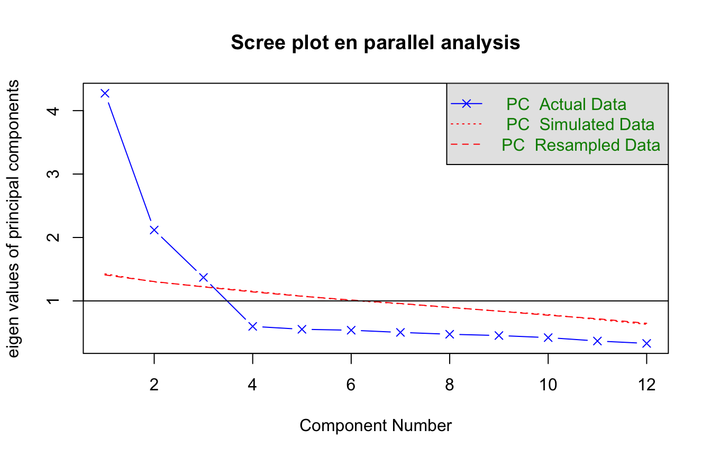
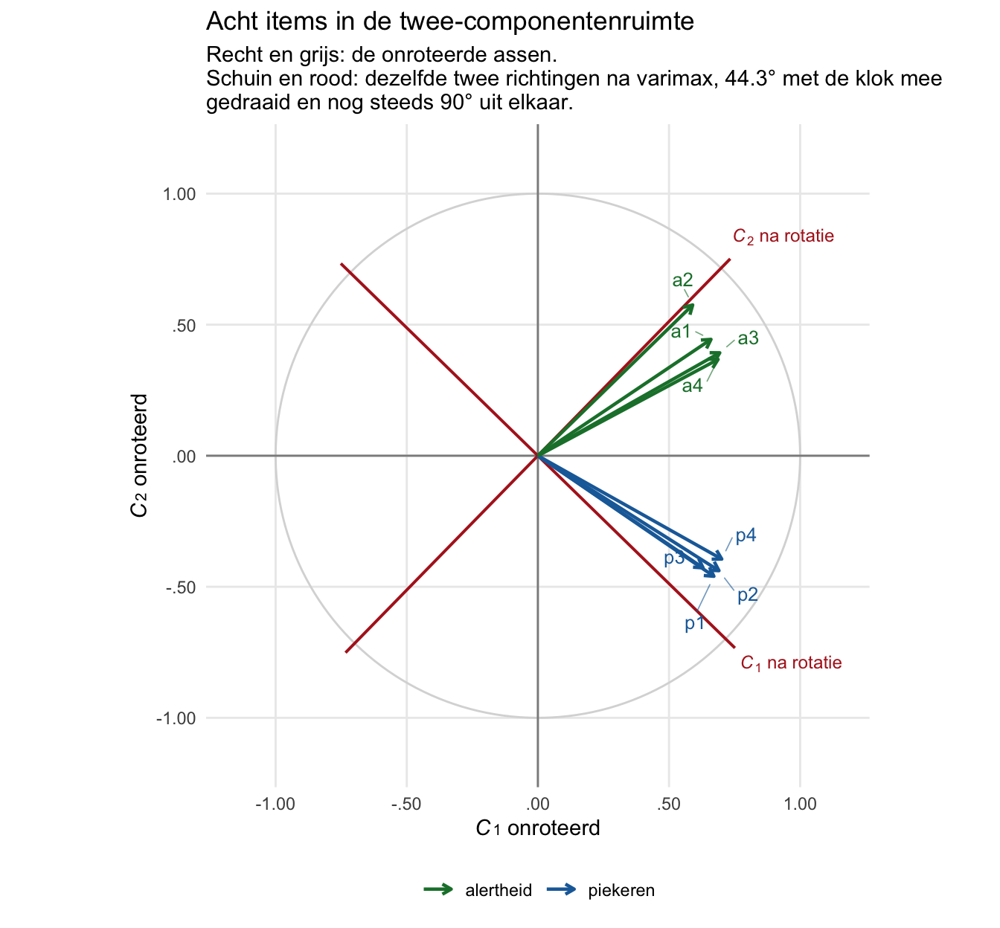

| Drie groepen op creativiteit, uiterlijk en intelligentie | |||
| K | U | I | |
|---|---|---|---|
| nerds | 130 | 100 | 140 |
| politieagenten | 80 | 110 | 80 |
| chippendales | 130 | 140 | 110 |
| Note. K = creativiteit, U = uiterlijke schoonheid, I = intelligentie. | |||
4. Principal Component Analysis (PCA) — minder is meer
Het verhaal van dit thema
De rat zat op de schommel-tak en keek naar de twaalf items van de wezel.
“Twaalf vragen,” zei hij. “Te veel.”
“Dat zegt iedereen,” zei de wezel. “Maar ze meten elk iets anders.”
“Dat zegt iedereen ook.” De rat tikte met zijn klauwtje op een blad. “Ik wil plaatjes zien. Twaalf cirkels in een ruimte, en kijken hoeveel er eronder liggen. Vier? Drie? Twee? Eén?”
“En dan?”
“Dan houden we drie. Of twee. En de rest gooien we weg.” De rat lachte zonder geluid. “Minder is meer.”
NoteHet toverwoord van vandaag is reductie
Er is zoveel informatie. Maar is dat allemaal verschillende informatie? Of zeg je eigenlijk heel vaak stiekem hetzelfde, via een andere weg?
Dat is de hele vraag van dit thema. Je hebt twaalf items. Straks heb je er misschien nog drie dingen voor terug — en als het goed is mis je niets.
We beginnen niet bij de techniek. We beginnen bij drie groepen mensen en een mening.
Nerds, politieagenten en chippendales
Wat een gewicht doet
Stel, je meet drie groepen: nerds, politieagenten en chippendales. En je meet ze op drie dingen — hun creativiteit, hun uiterlijke schoonheid en hun intelligentie. Die drie kort ik af als K, U en I; de K omdat de C verderop al vergeven is aan de componenten.
En de chippendales, voor wie die naam niets zegt: een Amerikaanse stripteasegroep uit de jaren tachtig, beroemd genoeg om een soortnaam te worden. Vlinderdas, manchetten, verder vooral geen overhemd. Houd dat plaatje even vast, want het verklaart zo meteen hun rij in de tabel.
Normaal meet je natuurlijk geen drie dingen maar vijfentwintig of honderd. Drie is hier genoeg om te zien wat er gebeurt.
Kijk even naar de rijen. De nerds zijn creatief en hun intelligentie is sky high; hun uiterlijk valt te bezien. De chippendales scoren hoog op uiterlijk, zijn ook creatief, en hun intelligentie is ook best redelijk. De politieagenten zitten er op K en I onder.
Nu wil je die drie getallen per groep terugbrengen tot één getal. In thema 1 en 2 deed je dat al: je telde de items op (rowSums) of je nam het gemiddelde (rowMeans). Een totaalscore, een schaalscore.
Maar we gaan niet zomaar een gemiddelde nemen. We nemen een gewogen gemiddelde.
Dat ken je al — je tentamencijfer
Je deeltentamen 1 telt voor \(80\%\) mee en deeltentamen 2 voor \(20\%\). Je haalt een \(7\) en een \(6\). Wat is je cijfer?
Geen \(6{,}5\). Het ligt dichter bij de \(7\), want die \(80\%\) trekt er harder aan.
Hoe reken je het uit? Er is een gezellige manier:
\[ T = \frac{80 \cdot 7 + 20 \cdot 6}{100} \]
En er is de manier waarin je de gewichten kunt zien staan:
\[ T = 0{,}8 \cdot 7 + 0{,}2 \cdot 6 \]
Allebei goed. Maar vanaf nu denken we in die tweede vorm, want daar staat wat we willen zien: wat is het gewichtje dat bij de eerste variabele hoort, en wat bij de tweede?
Dat heet een gewogen som — of, wat hetzelfde is, een gewogen gemiddelde. Een gepoold gemiddelde. Carpoolen: je neemt twee dingen samen en je kijkt naar de weging.
Mijn eerste weging: intelligentie is het belangrijkst
Ik vind in het leven intelligentie nu eenmaal belangrijker dan creativiteit of uiterlijk. Dus ik kies mijn gewichten zo:
\[ C_1 = 2\,K + 1\,U + 4\,I \]
Normaal ligt een gewichtje tussen \(0\) en \(1\). Dat maakt hier niet uit — het gaat om het idee. Ruw is ruk, maar het is relatief.
Reken maar mee voor de nerds. Eerst elk gewicht keer zijn score, dan pas optellen:
\[ \begin{aligned} 2 \cdot 130 &= 260 &&\text{(creativiteit)} \\ 1 \cdot 100 &= 100 &&\text{(uiterlijk)} \\ 4 \cdot 140 &= 560 &&\text{(intelligentie)} \\[4pt] \hline &= 920 \end{aligned} \]
Kijk waar het gewicht van \(4\) terechtkomt: die ene regel is in zijn eentje groter dan de andere twee samen.
| Dezelfde drie groepen, teruggebracht tot één gewogen som | ||||
| K | U | I | C1 | |
|---|---|---|---|---|
| nerds | 130 | 100 | 140 | 920 |
| politieagenten | 80 | 110 | 80 | 590 |
| chippendales | 130 | 140 | 110 | 840 |
| Note. C1 = 2K + 1U + 4I. K = creativiteit, U = uiterlijke schoonheid, I = intelligentie. | ||||
Drie scores, teruggebracht tot één. En de nerds staan bovenaan, de politieagenten onderaan.
Hoe komt dat? Kijk naar de gewichten. Ik heb het grootste gewicht aan intelligentie gegeven, dus een score op \(C_1\) weerspiegelt vooral intelligentie, en een beetje creativiteit, en nog een klein beetje uiterlijk.
En nu wordt het leuk, want nu ga ik interpreteren. Wat hebben de nerds in het gewone leven méér dan de politieagenten — iets wat je bereikt mét creativiteit, uiterlijk en intelligentie? Zoiets als maatschappelijk succes. En omdat intelligentie hier het zwaarst weegt, noem ik \(C_1\) even de mate van intellectueel succes.
Ja, ik ben een beetje bevooroordeeld, en dat mag je horen.
Tweede weging, gewoon omdat het kan
Nu draai ik het om. Ik vind creativiteit nog steeds belangrijk, maar vandaag vind ik uiterlijk nóg belangrijker:
\[ C_2 = 2\,K + 4\,U + 1\,I \]
Reken het opnieuw uit. Zelfde tabel, zelfde getallen, andere gewichten.
| Twee wegingen van dezelfde drie eigenschappen | |||||
| K | U | I | C1 | C2 | |
|---|---|---|---|---|---|
| nerds | 130 | 100 | 140 | 920 | 800 |
| politieagenten | 80 | 110 | 80 | 590 | 680 |
| chippendales | 130 | 140 | 110 | 840 | 930 |
| Note. C1 = 2K + 1U + 4I. C2 = 2K + 4U + 1I. K = creativiteit, U = uiterlijke schoonheid, I = intelligentie. | |||||
Kijk wat er gebeurde. Op \(C_1\) wonnen de nerds. Op \(C_2\) winnen de chippendales.
Zelfde drie groepen. Zelfde negen getallen. Andere winnaar.
Dat is het hele punt van deze bladzijde: een gewogen som is een keuze, en die keuze bepaalt wie er bovenaan komt.
En interpreteren doe je weer. Met wat kom je het verst in het leven als vooral je uiterlijk meetelt? Dan is het niet zozeer intellectueel succes — dan is het, heel ruim genomen, zoiets als theatersucces. Een nerd heeft dat ook wel, maar niet zoveel als een chippendale, want daar heb je vooral uiterlijk voor nodig.
Dus wat heb je nu ontdekt? Dat deze vragenlijst van drie items eigenlijk twee richtingen heeft. Een intellectuele-succes-richting als je de items op die ene manier weegt, en een theatersucces-richting als je ze op die andere manier weegt. Misschien zijn dat wel de enige twee wegingen die je wilt hebben. En dan zeg je: ik had drie items, maar dat interesseert me niet meer — ik heb het teruggebracht tot twee nieuwe dingen.
Dat is het gevoel. De rest van dit thema is dat gevoel, met machines erbij.
NoteVraag T1 — Pen-en-papier
Je hebt dezelfde drie groepen en dezelfde drie eigenschappen.
a) Probeer een weging te vinden waarbij de politieagenten winnen, met gewichten die geen van drieën negatief zijn. Schrijf hem op als \(C_3 = a\,K + b\,U + c\,I\) en reken de drie totalen uit. Lukt het? Zo nee: leg uit waaróm het niet lukt — dat antwoord is hier het echte antwoord.
b) En nu de andere kant op: bestaat er een weging waarbij alle drie de groepen precies even hoog scoren? Negatieve gewichten mogen nu wel. De weging waarbij alles \(0\) is telt niet mee.
c) Je geeft creativiteit gewicht \(2\), uiterlijk gewicht \(1\) en intelligentie gewicht \(4\). Iemand anders gebruikt \(20\), \(10\) en \(40\). Verandert de volgorde van de drie groepen?
d) Welke van de drie eigenschappen zou je een gewicht van \(0\) kunnen geven zonder dat de volgorde op \(C_1\) verandert? Wat zegt dat over die eigenschap?
CautionAntwoord — open na je eigen poging
a) De politieagenten scoren alleen op uiterlijk hoger dan de rest (110 tegen 100 en 140). Dus alleen uiterlijk laten meetellen helpt nog niet — de chippendales scoren daar nóg hoger. Er is geen weging met niet-negatieve gewichten waarbij de politieagenten winnen: op elk van de drie eigenschappen scoort minstens één andere groep hoger of gelijk, en op K en I scoren ze op beide het laagst. Dat is de les: een gewogen som kan alleen een groep bovenaan zetten die ergens écht uitsteekt.
b) Ja, en er is er precies één soort. Probeer \(C = 21K - 15U - 20I\):
Toon code (de weging die alle drie gelijk zet)
as.matrix(groepen[, c("K","U","I")]) %*% c(21, -15, -20) |>
setNames(groepen$groep) [,1]
[1,] -1570
[2,] -1570
[3,] -1570
attr(,"names")
[1] "nerds" "politieagenten" "chippendales" Alle drie hetzelfde getal. Dat is geen toeval en geen trucje: je stelt twee eisen (groep 1 = groep 2, en groep 2 = groep 3) aan drie onbekende gewichten, en twee eisen laten één vrijheid over. Er is dus altijd zo’n weging, bij elke tabel — alleen bestaat hij hier uit een plus en twee minnen, en zo’n weging is inhoudelijk onzin.
En dát is de les. Een weging die iedereen gelijk zet, is een weging die je niets vertelt. PCA zoekt precies de andere kant op: de richting waarin de verschillen het grootst zijn.
c) Nee. Alle drie de totalen worden precies tien keer zo groot, dus de volgorde blijft. Alleen de verhouding tussen de gewichten doet ertoe, niet hun absolute grootte. Daarom mag je gewichten ook herschalen naar iets tussen \(0\) en \(1\) zonder dat er inhoudelijk iets verandert.
d) Uiterlijk (U). Reken na: met \(2K + 0 \cdot U + 4I\) krijg je \(820\), \(480\) en \(700\) — zelfde volgorde. Met een klein gewicht draagt een variabele nauwelijks bij aan de component. Onthoud dat: straks ga je naar ladingen kijken, en dan is dicht bij nul precies de reden om te zeggen dat een item niet bij die component hoort.
Wat R hier van maakt
De gewichtjes worden gezocht in plaats van gekozen
In het verhaal hierboven koos ík de gewichten. \(2\), \(1\) en \(4\), omdat ik dat vond.
Vandaag geef je R die items en zeg je: ga jij maar zoeken of je richtingen vindt.
En wat R dan doet is dit. Hij gaat kijken of die gewichtjes een bepaalde waarde kunnen hebben, zódanig dat er iets zinvols uitkomt — en zinvol betekent hier eerst statistisch: zit er een heftige richting in, een richting waarin veel variatie zit. En als hij die gevonden heeft, zegt hij: leuk, en gaat hij verder zoeken. Kunnen we nóg andere gewichtjes verzinnen? Dat wordt dan de tweede component.
\[ \begin{aligned} C_1 &= a_{11}X_1 + a_{12}X_2 + a_{13}X_3 + \dots + a_{1k}X_k \\[4pt] C_2 &= a_{21}X_1 + a_{22}X_2 + a_{23}X_3 + \dots + a_{2k}X_k \end{aligned} \]
Dat is dezelfde vorm als mijn \(C_1\) en \(C_2\) hierboven. Alleen staan er nu letters op de plek van de gewichten, want R moet ze nog invullen.
En dán, als de gewichten er staan, gaan we ze interpreteren. Dat is op zich subjectief, en daar zit eigenlijk de hele crux.
NoteA. Wat is PCA?
Principal Component Analysis PCA zoekt gewichten voor je items, zodat een klein aantal gewogen sommen — de componenten — zoveel mogelijk vangt van de variatie die in al die items samen zat.
In één zin: je hebt \(k\) items, en je vindt \(m\) (met \(m < k\)) componenten die het meeste samenvatten van wat in die \(k\) items zit.
Drie dingen die je daarbij vasthoudt:
- Een component is een gewogen som van je items. Precies zoals het tentamencijfer een gewogen som van twee deelcijfers was.
- De gewichten worden gezocht, niet gekozen. Eerst de richting met de meeste variatie, dan de volgende.
- Wat de componenten betékenen, bepaal jij. De machine levert getallen; de interpretatie is mensenwerk, en dus discutabel.
Wiskundig gebeurt dit via een eigenvalue-decompositie van de correlatiematrix, \(R = V \Lambda V^\top\), met \(V\) de matrix van eigenvectoren en \(\Lambda\) de diagonaalmatrix van eigenwaarden. Die formule hoef je niet te kunnen; hij staat hier zodat je hem herkent als je hem tegenkomt.
NoteEén ding, vijf namen
Hier lopen synoniemen doorheen, en ze betekenen in dit thema hetzelfde:
component · factor · dimensie · richting · as
Noem het assen, noem het functies, noem het latente variabelen, noem het dimensies. Factor is gewoon een ander woord voor dimensie of component. Waar het in dit thema écht uitmaakt — bij het verschil tussen PCA en factor-analyse — staat het er expliciet bij. Zie de cross-link-callout hieronder, en de Don’t aan het eind.
Meneer Holland en de honderd vragen
Reductie, op ware grootte
Holland was een psycholoog die onderzoek deed naar persoonlijkheid en beroepen. Zijn gedachte: als je een bepaalde persoonlijkheid hebt, vind je waarschijnlijk een bepaald beroep leuk. Dat is nogal handig om te weten.
Dus stelde hij heel veel vragen. Denk aan een vragenlijst van honderd items over alledaagse dingen — hoe vaak speel je een muziekinstrument, hoe vaak ga je boodschappen doen, verzin het maar.
Kun je je voorstellen dat sommige van die items met elkaar correleren?
En wat betekent het als twee items correleren? Dat de kans er is dat ze hetzelfde meten, of ongeveer hetzelfde. Speel je vaak muziek, componeer je, en schrijf je vaak gedichten — dan ben je waarschijnlijk creatief. Iets in die trant.
Even rekenen: bij honderd items heb je \(100 \cdot 100 = 10\,000\) cellen in de correlatiematrix, min de honderd op de diagonaal is \(9\,900\), en omdat elke correlatie er twee keer in staat houd je er \(4\,950\) over. Dat kun je niet even met het oog bekijken.
Holland ging zoeken naar groepjes items die hoog met elkaar correleerden. Binnen een groepje hoog, tussen groepjes laag — want dan meet zo’n groepje waarschijnlijk één specifiek ding.
Hij vond er uiteindelijk zes, en hij zette er assen doorheen. Op de ene as stonden de creatieve beroepen aan de ene kant: kunstenaars, muzikanten, dichters, schrijvers.
En nu de leuke vraag. Welke beroepen denk je dat aan de andere kant van die as zaten — dus welke persoonlijkheid is het mínst creatief?
Politiemensen. Holland noemde die kant conservatief, oftewel behoudend, en behoudend betekent hier vooral hiërarchisch: regels, gezag, respect. Dat is nogal het tegenovergestelde van de vrijheid die een kunstenaar wil.
Op een andere as stonden de investigative beroepen — wetenschappers. Niet toevallig vlak naast de creatievelingen, want voor wetenschap moet je ook creatief zijn. En daar tegenover: de enterprising beroepen, ondernemers. Waar priesters ook onder vielen.
Wat hebben een priester en een ondernemer gemeen, en wat onderscheidt ze allebei van een wetenschapper? Dat is dezelfde vraag, twee kanten op. Een echte wetenschapper is op zoek naar de waarheid. Een ondernemer boeit die waarheid niet zo — die verkoopt een waarheid. Net als een priester: dat is geen zoektocht maar iets wat je oplepelt. Misschien is het juist die onzekerheid van de wetenschap die de twee kanten scheidt.
En dan nog de sociale beroepen tegenover de realistische. Realistisch betekent hier niet “intelligent” maar vooral tastbaar: timmermannen en boekhouders. Als de berekening klopt, als de deur past, dan is het klaar. In de sociale beroepen zijn we pas blij als we elkaar begrijpen, en daar is niets tastbaars aan.
Dit is waar het bij mij begon, trouwens. Ik was tweeëntwintig, ik kreeg deze dataset onder statistiek, en er kwam dit uit. En ik dacht: dit is wel iets anders dan er is verschil. Dit leert je iets.
NoteWaarom dit een goed voorbeeld is
Let op wat Holland dus niet deed. Hij begon niet met zes types en ging toen kijken of ze klopten. Hij begon met honderd vragen waarvan hij niet wist wat ze maten, en de zes types kwamen eruit.
Dat heet exploratief: verkennend, ontdekkend. Je hoeft van tevoren niets te weten.
In de praktijk weet je als psycholoog meestal wél iets — je weet vaak al hoeveel dimensies een vragenlijst hoort te hebben. Maar het hoeft niet, en dat is het mooie. Knal er honderd variabelen in, reduceer, en kijk wat je overhoudt.
Volgende week doe je het andersom: dan heb je een idee en ga je toetsen of het klopt. Dat heet confirmatief, en dat is thema 5.
Nu pas de puntenwolk
Hoeveel richtingen zitten er in een plat vlak?
Neem even twee items, \(X_1\) en \(X_2\). Denk aan een wiskundeproefwerk: \(X_1\) is een kale rekenvraag (“bereken de top van de parabool”) en \(X_2\) is zo’n verhaaltjessom, met een taalverhaal eromheen.
Zijn die twee gecorreleerd? Ja — slimme mensen doen ze allebei goed en domme mensen allebei fout.
Teken de puntenwolk. Positief verband, dus van linksonder naar rechtsboven.
Nu een trucje: haal de assen weg en kijk alleen naar de wolk. Is het nog dezelfde wolk? Ja. De puntjes hebben ten opzichte van elkaar nog steeds dezelfde positie — de relatieve configuratie is niet veranderd.
Beschrijf die wolk nu nog eens. Wat zie je vooral gebeuren?
Eerst het simpele feit: de puntjes hebben niet allemaal dezelfde positie. Ze variëren. Maar hóe variëren ze? Vooral in één richting: van linksonder naar rechtsboven.
Zijn we het eens dat die puntjes op een plat vlak liggen? Dus hoeveel dimensies heeft dit figuur? Twee. Een plat vlak heeft er twee.
Maar een plat vlak heeft niet één richting — het heeft er twee. Dus waar gaat de tweede heen?
Er haaks op. Negentig graden. Zoals de breedte altijd haaks op de lengte staat, en bij lengte-breedte-hoogte precies hetzelfde verhaal. Daar heb je misschien nooit over nagedacht, maar zo kiezen we het altijd.
En nu zijn de richtingen op.
NoteWat je net gedaan hebt
Je hebt twee nieuwe assen door een wolk gelegd. De eerste ligt in de richting waarin de punten het meest variëren; de tweede staat er haaks op.
Noem ze \(C_1\) en \(C_2\) — en dat zijn dezelfde \(C_1\) en \(C_2\) als bij de chippendales. Alleen koos ik daar de gewichten zelf, en hier komen ze uit de wolk.
Elk punt kun je nu herdefiniëren op die twee nieuwe assen. Zat een leerling op \((6, 4)\) in de oude assen — een \(6\) op de rekenvraag en een \(4\) op de verhaaltjessom — dan heeft hij nu twee nieuwe coördinaten: eentje op \(C_1\) en eentje op \(C_2\). Zelfde leerling, zelfde wolk, andere beschrijving.
En dáár zit de winst: die nieuwe assen kunnen een heel nieuwe interpretatie opleveren. Let op wát ze hier betekenen, want dat is niet wat je zou gokken.
\(C_1\) loopt door de lange kant van de wolk, en daar liggen de leerlingen die op allebei hoog scoren aan de ene kant en die op allebei laag scoren aan de andere. \(C_1\) is dus geen van beide vaardigheden apart — het is zoiets als hoe goed ben je in wiskunde, alles bij elkaar.
En \(C_2\) staat daar haaks op. Hoog op \(C_2\) betekent dan: hoger op de ene vraag dan je op grond van \(C_1\) zou verwachten, en lager op de andere. \(C_2\) zegt dus niet hoe góed je bent maar welke kant je overhelt — meer een rekenaar of meer een taalmens.
Die twee soorten komen steeds terug: een eerste richting die optelt, en een tweede die onderscheidt. Bij de onroteerde PCA op de bosdieren zie je ze allebei terug, en dan hebben ze ook een naam.
Met twee items houd je twee richtingen over, en dat is geen reductie. Maar je hebt normaal geen twee items — je hebt er vijfentwintig. Dan heb je ook vijfentwintig richtingen, en ga je kijken naar alleen de belangrijkste: die waar veel variatie zit. Als je van vijfentwintig naar drie of vier gaat en je kunt die vier interpreteren, dan heb je wat je zocht.
Dat is ook precies wat de Big Five is: honderd gedragingen, teruggebracht tot vijf assen. En dat is trouwens wat een taalmodel met woorden doet — elk woord krijgt een richting in een ruimte met heel veel dimensies. Oom wijst ongeveer dezelfde kant op als man, met een kleine hoek ertussen, want ze meten iets vergelijkbaars. En tante staat in diezelfde kleine hoek naast vrouw.
Onthoud die hoek. Een kleine hoek tussen twee richtingen betekent gecorreleerd. Een rechte hoek betekent: die twee hebben niets met elkaar te maken. Daar komen we bij het roteren op terug.
NoteB. Wanneer werkt PCA — en wat je er minstens voor nodig hebt
Er zijn voorwaarden voor het doen van een PCA, en de belangrijkste is saai: genoeg mensen. Heb je er te weinig, dan is de oplossing niet betrouwbaar — de gevonden richtingen verschuiven bij de volgende steekproef.
Hoeveel je er nodig hebt hangt af van het aantal items. Vuistregel: \(n \geq 100\), of tien deelnemers per item. Onder \(n = 50\) zijn PCA-resultaten instabiel.
Daarnaast moeten items continu of interval-achtig zijn (Likert-items behandelen we als interval). Voor binaire items: tetrachorische correlaties, psych::tetrachoric().
Er bestaan ook twee formele toetsen die vragen of de correlatiematrix genoeg samenhang bevat — KMO en Bartlett’s test of sphericity. Die staan in 4.1.b. Zet ze op je spiekbriefje, maar laat je er niet door in de war brengen: ze zeggen alleen of er iets te vinden valt, niet of wat je vindt iets bétekent.
NoteC. Rat-frame — wat onderzoeken we?
De rat heeft twaalf items en wil weten:
- Hoeveel richtingen zitten er in? (eigenwaarden, scree plot, parallel analysis)
- Welke items horen bij welke richting? (componentladingen, en roteren om ze leesbaar te maken)
- Hoe goed wordt elk item door die richtingen teruggegeven? (communaliteiten)
- En: hij wil plaatjes.
NoteRefresh — wat je uit thema 1, 2 en 3 meeneemt
- Thema 1: schaalniveaus, ruwe scores, norm-scoren. Ruw is Ruk. En:
rowSumstegenoverrowMeans— een somscore van tien items loopt van \(10\) tot \(60\), en dan moet je erbij vertellen hoeveel items het waren én hoe ze liepen. Bij een gemiddelde hoef je alleen dat tweede te weten. Een component is hetzelfde idee, maar dan met ongelijke gewichten. - Thema 2: Cronbach’s \(\alpha\) als betrouwbaarheid van één schaal. Die aanname is dat de schaal één dimensie heeft. PCA is de toets daarop: laden de items op meerdere componenten, dan is \(\alpha\) misleidend. Let op — \(\alpha\) is betrouwbaarheid, niet validiteit en niet dimensionaliteit; PCA gaat over dat derde.
- Thema 3: construct-validiteit via andere tests — convergent en discriminant, het nomologisch netwerk. Dat was validatie van buitenaf. Vandaag kijken we in de test zelf: hoe hangen de items onderling samen?
WarningCross-link — PCA-componentlading tegenover EFA/CFA-factorlading
Twee technieken die het allebei over “ladingen” hebben, maar wezenlijk verschillen:
| PCA — componentlading | EFA / CFA / SEM — factorlading | |
|---|---|---|
| Richting | item → component (formatief) | latente factor → item (reflectief) |
| Meetfout | niet gemodelleerd | expliciet gemodelleerd |
| Variantie | geobserveerde variantie | gemeenschappelijke tegenover unieke variantie |
| Schatting | eigenvector-decompositie | ML / GLS |
| R-functie | prcomp(), princomp(), psych::principal() |
psych::fa(), lavaan::cfa(), lavaan::sem() |
Het verschil zit in de pijl, en dat is een echte psychologische vraag. Neem depressie. Je tekent het als een ovaal, met de items als vierkantjes eromheen. Wijst de pijl van depressie naar de items, dan is depressie iets dat bestaat en dat piekeren veroorzaakt — zoals een biljartbal een andere aantikt. Dat heet reflectief: piekeren is een weerspiegeling van depressie.
Wijzen de pijlen van de items naar de ovaal, dan zeg je iets veel bescheideners: deze gedragingen hangen samen en dat clubje noemen wij depressie. Dat heet formatief.
Ken je de term juppie? Jong, een beetje rijk, een huis, een auto. Als jij aan die indicatoren voldoet, zit er dan een jup in je hoofd? Nee toch. Wij zeggen alleen dat die variabelen bij elkaar zo liggen, en dan noemen we dat een jup. Puur beschrijvend.
PCA kijkt formatief. Een component is de gewogen som van de items — er zit niks onder. Besef alleen dat mensen bij dit soort analyses makkelijk gaan geloven dat het ding er echt is. Heel veel psychologen doen alsof depressie bestaat zoals een steen bestaat, en dat is nooit bewezen.
Wie latente trekjes met meetfout wil modelleren, gebruikt EFA of CFA — thema 5.
Werkmaterialen — R-pakketten en functies
De rat pakt zijn gereedschap
| Gereedschap | Waar het voor is | Pakket |
|---|---|---|
psych::principal() |
PCA met rotatie, ladingen en communaliteiten | psych |
eigen() |
Eigenwaarden en eigenvectoren van de correlatiematrix | base |
psych::scree() |
Scree plot | psych |
psych::fa.parallel() |
Parallel analysis | psych |
psych::KMO() |
Sampling adequacy | psych |
psych::cortest.bartlett() |
Bartlett’s test of sphericity | psych |
prcomp() |
Base-R PCA (geen rotatie ingebouwd) | base |
NoteCode in dit hoofdstuk — wat moet je kunnen typen?
Open-code op tentamen: psych::principal(.., nfactors = , rotate = "none" / "varimax" / "oblimin"), eigen(), psych::scree(), psych::fa.parallel(), psych::KMO(), psych::cortest.bartlett(). Code voor plot-decoratie of tabellen staat ingeklapt.
Eén tip die bij psych echt helpt: sla je model op in een object en klik het open in je Environment-venster. Dan zie je wat erin zit — $values, $loadings, $communality — en kun je de getallen die je met de hand uitrekende terugvinden. Twee manieren om jezelf te controleren is beter dan één.
Notatie — symbolen voor PCA
NoteSleutelsymbolen
- aantal items (\(k\)). Let op: veel boeken schrijven hier \(p\) voor. Dat is dezelfde \(p\)-letter als die van een p-waarde en het heeft er niets mee te maken; in dit hoofdstuk houden we \(k\) aan.
- aantal behouden componenten (\(m\)), met \(m < k\).
- componentlading (\(a_{ij}\)) — het gewicht van item \(i\) op component \(j\). Eerste subscript is het item, tweede de component.
- communaliteit (h²) — per item: hoeveel van de variatie in dat item de behouden componenten samen terugverklaren. Over de rij kwadrateren en dán optellen.
- eigenwaarde (λ) — per component: hoeveel variatie die component vangt. Over de kolom kwadrateren en dán optellen.
- verklaarde variantie (VAF, variance accounted for) — λ gedeeld door het aantal items.
- componentcorrelatie (Φ) — alleen bij oblique rotatie: hoe sterk de componenten onderling samenhangen.
De twee formules die je moet kunnen gebruiken:
\[ h_i^2 = \sum_{j=1}^{m} a_{ij}^2 \qquad\qquad \lambda_j = \sum_{i=1}^{k} a_{ij}^2 \]
Ze zien er bijna hetzelfde uit, en dat is geen toeval. Het verschil is de richting waarin je optelt: \(h^2\) gaat over een rij (één item, over de componenten heen), λ over een kolom (één component, over de items heen).
Let op de sommen: het is een sum of squares, geen square of the sum. Eerst kwadrateren, dan pas optellen. En omdat je kwadrateert, verdwijnen de minnetjes vanzelf — die hoef je niet eens in te tikken.
Ook handig om te weten: \(\sum_j \lambda_j = k\) als je álle componenten meeneemt. Gebruik je er minder, dan is de som kleiner, en dat verschil ís de reductie.
TipVuistregels zijn afspraken, geen wetten
- Aantal componenten — drie criteria:
- Kaiser-criterium: houd componenten met \(\lambda > 1\). Snel, en vaak te veel.
- Scree plot: houd de componenten vóór de knik. Visueel en subjectief.
- Parallel analysis: vergelijk je eigenwaarden met die van willekeurige data. Meestal het beste van de drie.
- Rotatie:
- varimax (orthogonaal): de assen blijven haaks, dus de componenten blijven ongecorreleerd.
- oblimin / promax (oblique): de assen mogen scheef, dus de componenten mogen correleren.
- Communaliteit: \(h^2 \geq .40\) als ondergrens; onder \(.30\) is een item kandidaat om weg te halen.
- Componentlading: \(\geq .40\) voor een primaire lading; boven \(.30\) op méér componenten tegelijk is een ambigu item.
Verschillende vakgroepen hanteren andere drempels. Voor je tentamen: check je eigen college-sheets, en let ook even op de letter die zij voor een lading gebruiken — sommige boeken schrijven \(a_{ij}\), andere \(c_{ij}\). Het is hetzelfde getal. Wat overal λ heet is de eigenwaarde, en dat is iets anders dan een lading.
TipEn wat schrijf je dan op een tentamen?
Dat de criteria elkaar tegenspreken is eerlijk, maar je hebt op een tentamen ook gewoon een antwoord nodig. Kijk daarom naar het werkwoord in de vraag:
| de vraag zegt | jij doet |
|---|---|
| “volgens het Kaiser-criterium” | tel hoeveel eigenwaarden boven \(1\) liggen. Niets anders. |
| “volgens het knik-criterium” | tel de componenten vóór de duidelijkste knik. |
| “volgens parallel analysis” | tel de componenten boven de lijn van de willekeurige data. |
| “hoeveel componenten kies je” | noem wat de criteria zeggen, zeg welke je volgt, en waaróm. |
Alleen die laatste vraagt om jouw oordeel. Bij de eerste drie is precies één telling goed, ook als je zelf vindt dat het criterium er naast zit — dat mag je erbij zetten, maar het antwoord blijft het getal.
En als je tóch moet kiezen, is dit de volgorde waarin dit hoofdstuk de vier weegt:
inhoud → parallel analysis → knik → Kaiser.
Wat je doet als je een vragenlijst valideert
De hele route, op één bladzijde
Vanaf hier gaat dit hoofdstuk één lange PCA doen, in stukjes. Zes stappen. Hieronder staan ze bij elkaar, zodat je onderweg weet waar je bent — en zodat je later kunt terugslaan zonder het hele hoofdstuk opnieuw te lezen.
| wat je doet | waar het staat | |
|---|---|---|
| 1 | Kijk eerst naar je data. Verdelingen, ontbrekende waarden, en vooral de correlatiematrix: zitten er groepjes items in die onderling hoog correleren? | 4.1.a |
| 2 | Toets de voorwaarden. Genoeg dieren per item — en de twee formele voorvragen, KMO en Bartlett. | 4.1.b |
| 3 | Bepaal hoeveel componenten. Eigenwaarde boven \(1\) (het Kaiser-criterium), de knik in de scree plot, parallel analysis. Hoeveel variantie je vangt noteer je erbij — dat beschrijft je oplossing, maar je kiest er niet op. | 4.1.c en 4.1.d |
| 4 | Roteer en interpreteer. Lees de ladingen, kijk welke items bij elkaar horen, en geef elke component een naam. | 4.2.a tot en met 4.2.d |
| 5 | Draai hem opnieuw met een ander aantal componenten. Eén keer minder, één keer meer. Wordt de interpretatie er beter of slechter van? ⟲ terug naar stap 3 | 4.2.e |
| 6 | Beslis op inhoud, niet op statistiek. En schrijf op wat je nu weet over je vragenlijst. | 4.2.e, en de modelzin in 4.2.d |
Let op dat pijltje bij stap 5. Dit is geen lijstje dat je één keer van boven naar beneden afloopt. Bij stap 5 herzie je het getal dat je bij stap 3 koos — je legt het model gewoon een ander aantal componenten op — en loopt daarmee opnieuw door stap 4 heen. Dat is geen teken dat je iets fout deed; zo hoort het. Een vragenlijst valideer je niet in één rechte lijn.
En stap 6 is waar het om begonnen was. In thema 3 keek je van buitenaf naar de construct-validiteit van een test, met andere tests ernaast. Vandaag kijk je van binnenuit.
Want je doet dit niet om componenten te verzamelen. Vallen de items uiteen in de groepjes die de ontwerper bedoeld had? Dan gedragen ze zich zoals het construct voorspelt, en dat is steun voor de construct-validiteit van die lijst. Vallen ze ánders uiteen, dan heb je iets geleerd dat je niet zocht.
4.0 Project- en datavoorbereiding
install.packages(c("tidyverse", "psych"))
# Alleen nodig als je de ladingenplot verderop zelf wilt natekenen:
install.packages("ggrepel")load("data/bos_dieren_dimensies.RData")
str(bos_dieren_dimensies)'data.frame': 200 obs. of 14 variables:
$ dier_id : Factor w/ 200 levels "d001","d002",..: 1 2 3 4 5 6 7 8 9 10 ...
$ diersoort: Factor w/ 4 levels "bunzing","egel",..: 4 1 2 2 1 3 4 4 1 4 ...
$ p1 : num 3 2 4 2 3 3 4 3 4 2 ...
$ p2 : num 3 2 4 3 4 3 5 4 4 1 ...
$ p3 : num 2 2 3 5 4 3 4 4 4 2 ...
$ p4 : num 3 3 3 3 4 3 3 4 3 2 ...
$ a1 : num 3 3 4 4 4 4 3 3 4 2 ...
$ a2 : num 3 2 5 3 3 4 2 3 3 3 ...
$ a3 : num 3 2 4 3 4 4 4 4 5 3 ...
$ a4 : num 2 2 4 3 4 3 4 4 3 4 ...
$ u1 : num 3 2 5 2 3 4 1 3 2 4 ...
$ u2 : num 4 3 5 3 3 3 3 5 3 4 ...
$ u3 : num 3 3 5 3 2 3 2 3 3 2 ...
$ u4 : num 3 4 5 3 4 3 2 4 2 4 ...Per dier: dier_id, diersoort, en twaalf items op een \(5\)-puntsschaal. Vier over piekeren (p1 tot en met p4), vier over alertheid (a1 tot en met a4), vier over uitstelgedrag (u1 tot en met u4). Eén ontbrekende waarde op p3.
200 bosdieren dus, en 80 kraaien in de mini-dataset voor E5.
Let op dat die drie groepjes van vier de bedoeling van de ontwerper zijn, niet een uitkomst. Of de data zich daar iets van aantrekt, moet nog blijken.
items <- c("p1","p2","p3","p4","a1","a2","a3","a4","u1","u2","u3","u4")4.1 PCA — preconditie-checks en eigenwaarden
Hoeveel richtingen zitten erin?
“Eigenwaarden zijn aantal,” zei de rat. “Eerst hoeveel. Daarna welke.”
NoteVoor je gaat rekenen — vijf vragen aan jezelf
- Wie of wat wordt er gemeten? De rat heeft 200 bosdieren genoteerd.
- Wat wordt er gemeten? Twaalf items op een \(5\)-puntsschaal, ontworpen om drie dimensies te vangen.
- Onafhankelijk of afhankelijk? Geen van beide. Er is geen uitkomst die voorspeld wordt — we vragen hoeveel onderliggende richtingen er in deze twaalf items zitten.
- Meetniveau? Items zijn ordinaal, behandeld als interval.
- Welke techniek? PCA — twaalf items terugbrengen tot een handjevol componenten.
T2 — Wanneer PCA, en wanneer iets anders?
NoteVraag T2 — Pen-en-papier
Kies per vignet: PCA, EFA (exploratory factor analysis), CFA (confirmatory factor analysis), of niets / regressie.
a) Een onderzoeker heeft \(25\) items van een nieuw welzijnsinstrument. Ze weet niet hoeveel dimensies erin zitten en wil dat ontdekken.
b) Een psychometrist toetst of een \(20\)-item-vragenlijst past bij een vooraf gespecificeerde drie-factor-structuur.
c) Een psycholoog heeft \(50\) items en wil ze terugbrengen tot enkele samenvattende scores voor latere regressies; de causale richting interesseert hem niet.
d) Een onderzoeker wil weten of \(X\) een continue uitkomst \(Y\) voorspelt, gecontroleerd voor twee covariaten.
CautionAntwoord — open na je eigen poging
a) EFA. Onbekend aantal dimensies, exploratief, en ze wil latente factoren mét meetfout.
b) CFA. Vooraf gespecificeerde structuur, dus toetsen. CFA geeft model-fit (RMSEA, CFI).
c) PCA. Pure reductie — geen claim over wat eronder ligt, alleen samenvattende scores.
d) Niets / regressie. Geen reductievraag.
Vuistregel:
- Hoeveel dimensies? plus latente factor? = EFA
- Past mijn structuur? = CFA
- Wil ik scores samenvatten? = PCA
- Wil ik \(X \rightarrow Y\) voorspellen? = regressie
En let op het onderscheid dat ertoe doet: a) en c) doen allebei iets exploratiefs met veel items. Het verschil is of je gelooft dat er iets ónder de items zit dat ze veroorzaakt.
4.1.a Verkenning — correlatiematrix
Vandaag kijken we in de test zelf. Als twee items hoog correleren, meten ze waarschijnlijk hetzelfde. Dus voordat er één component berekend wordt: kijk naar de correlaties.
cor_mat <- cor(bos_dieren_dimensies[, items], use = "complete.obs")
round(cor_mat, 2) p1 p2 p3 p4 a1 a2 a3 a4 u1 u2 u3 u4
p1 1.00 0.55 0.49 0.54 0.25 0.12 0.35 0.25 0.11 0.17 0.09 0.10
p2 0.55 1.00 0.50 0.56 0.27 0.17 0.27 0.31 0.07 0.12 0.08 0.11
p3 0.49 0.50 1.00 0.48 0.23 0.17 0.24 0.27 0.11 0.12 0.09 0.13
p4 0.54 0.56 0.48 1.00 0.25 0.23 0.29 0.33 0.12 0.20 0.17 0.20
a1 0.25 0.27 0.23 0.25 1.00 0.52 0.49 0.51 0.26 0.28 0.18 0.23
a2 0.12 0.17 0.17 0.23 0.52 1.00 0.53 0.47 0.29 0.31 0.21 0.23
a3 0.35 0.27 0.24 0.29 0.49 0.53 1.00 0.52 0.31 0.37 0.20 0.28
a4 0.25 0.31 0.27 0.33 0.51 0.47 0.52 1.00 0.29 0.25 0.17 0.23
u1 0.11 0.07 0.11 0.12 0.26 0.29 0.31 0.29 1.00 0.55 0.50 0.53
u2 0.17 0.12 0.12 0.20 0.28 0.31 0.37 0.25 0.55 1.00 0.57 0.59
u3 0.09 0.08 0.09 0.17 0.18 0.21 0.20 0.17 0.50 0.57 1.00 0.52
u4 0.10 0.11 0.13 0.20 0.23 0.23 0.28 0.23 0.53 0.59 0.52 1.00
NoteTidyverse-alternatief
library(dplyr)
library(corrr)
bos_dieren_dimensies |>
select(all_of(items)) |>
correlate(use = "complete.obs") |>
shave() |>
fashion(decimals = 2)corrr::correlate() maakt er een tibble van; shave() halveert de symmetrische matrix; fashion() print het netjes.
NoteVragen 4.1.a
a) Zie je een blok-diagonaal patroon — correleren items binnen hetzelfde groepje sterker dan items uit verschillende groepjes?
b) Welke drie blokken herken je?
c) Hoe sterk zijn de correlaties tússen de blokken?
d) Wat voorspelt dat voor het PCA-resultaat?
CautionAntwoord — open na je eigen poging
a) Ja, duidelijk. De correlaties binnen een blok liggen tussen \(.47\) en \(.59\), gemiddeld \(.52\). Tussen de blokken: \(.07\) tot \(.37\), gemiddeld \(.21\).
b) Piekeren (p1–p4), alertheid (a1–a4), uitstelgedrag (u1–u4).
c) Gemiddeld \(.21\) — duidelijk lager dan binnen een blok, maar niet nul. De drie dimensies hangen onderling samen. Onthoud dat, want bij 4.2.d wordt het de reden om oblimin te overwegen.
d) Drie componenten met een eigenwaarde boven \(1\), en na rotatie drie nette groepjes. Maar let op: “blok-diagonaal in de correlatiematrix” is een verwachting, geen uitslag. Dat de ontwerper drie dimensies bedoelde, verplicht de data tot niets.
4.1.b KMO en Bartlett
Twee formele voorvragen. Bartlett’s test of sphericity toetst of de correlatiematrix verschilt van een identiteitsmatrix — dus of er überhaupt samenhang tussen de items zit. KMO (Kaiser-Meyer-Olkin) meet sampling adequacy: hoeveel van de samenhang tussen items door gemeenschappelijke factoren verklaard wordt, op een schaal van \(0\) tot \(1\). R geeft je er twee soorten: één getal voor de hele set (MSA) en één per item (MSAi). MSA staat voor measure of sampling adequacy — het is dus geen tweede maat maar dezelfde, per item uitgesplitst.
# KMO -- sampling adequacy.
psych::KMO(cor_mat)Kaiser-Meyer-Olkin factor adequacy
Call: psych::KMO(r = cor_mat)
Overall MSA = 0.85
MSA for each item =
p1 p2 p3 p4 a1 a2 a3 a4 u1 u2 u3 u4
0.80 0.85 0.88 0.84 0.88 0.83 0.86 0.88 0.87 0.84 0.84 0.85 # Bartlett's test of sphericity.
psych::cortest.bartlett(cor_mat, n = nrow(bos_dieren_dimensies))$chisq
[1] 859.1521
$p.value
[1] 2.033008e-138
$df
[1] 66
NoteVragen 4.1.b
a) Wat is de overall KMO? In welke kwaliteitscategorie valt die?
b) Welke items hebben de laagste individuele MSA? Wat zegt dat?
c) Is Bartlett significant? Wat is de implicatie?
d) Mag je hier PCA uitvoeren?
CautionAntwoord — open na je eigen poging
a) KMO \(= .85\). De gangbare indeling: \(\geq .90\) uitstekend, \(.80\)–\(.89\) goed, \(.70\)–\(.79\) middelmatig, \(.60\)–\(.69\) matig, \(.50\)–\(.59\) nauwelijks acceptabel, onder \(.50\) niet doen.
b) De individuele MSA’s lopen van \(.80\) (p1) tot \(.88\) (a4) — geen uitschieters. Een laag individueel MSA betekent dat een item weinig deelt met de rest.
c) χ²(66) = 859.15, p < .001. Sterk significant, dus de correlatiematrix verschilt duidelijk van een identiteitsmatrix.
d) Ja, allebei de drempels worden gehaald.
Maar wees eerlijk over wat je nu weet. Bartlett wordt bij \(n = 200\) vrijwel altijd significant — hij zegt alleen dat er íets samenhangt, niet dat het zinvol is. En KMO zegt niets over of je straks iets kunt interpreteren. Deze twee openen de deur; ze zeggen niet wat er in de kamer staat.
NoteModelzin — zo rapporteer je het
Voorafgaand aan de PCA werd de geschiktheid van de correlatiematrix gecontroleerd. De KMO-maat voor sampling adequacy bedroeg .85, en Bartlett’s test of sphericity was significant, χ²(66) = 859.15, p < .001. Beide wijzen erop dat de twaalf items voldoende samenhang vertonen voor een componentenanalyse.
4.1.c Eigenwaarden en verklaarde variantie
Elke richting heeft een eigenwaarde (λ) — niet van meneer Eigen, het is gewoon de naam. Hoe groter, hoe meer variatie die component vangt.
ev <- eigen(cor_mat)$values
data.frame(
component = seq_along(ev),
eigenwaarde = round(ev, 3),
VAF = round(ev / length(ev), 3),
cumulatief = round(cumsum(ev) / length(ev), 3)
) component eigenwaarde VAF cumulatief
1 1 4.281 0.357 0.357
2 2 2.120 0.177 0.533
3 3 1.373 0.114 0.648
4 4 0.588 0.049 0.697
5 5 0.554 0.046 0.743
6 6 0.539 0.045 0.788
7 7 0.505 0.042 0.830
8 8 0.473 0.039 0.869
9 9 0.454 0.038 0.907
10 10 0.417 0.035 0.942
11 11 0.367 0.031 0.972
12 12 0.331 0.028 1.000
NoteVragen 4.1.c
a) Hoeveel componenten hebben \(\lambda > 1\)?
b) Welk deel van de variantie verklaren de eerste drie samen?
c) Past dat aantal bij de drie dimensies uit het ontwerp?
d) Wat is de logica achter de drempel \(\lambda > 1\)?
CautionAntwoord — open na je eigen poging
a) 3: \(\lambda_1 = 4.28\), \(\lambda_2 = 2.12\) en \(\lambda_3 = 1.37\). De vierde zit op \(0.59\) en valt dus af.
b) \((4.28 + 2.12 + 1.37) / 12 = .65\), oftewel 64.8%. De overige negen richtingen zijn samen goed voor de resterende 35.2%.
c) Ja. Dat is prettig en niet vanzelfsprekend — zie 4.1.d.
d) Je rekent hier op de correlatiematrix, en dat is hetzelfde als rekenen op gestandaardiseerde items: een correlatie is een covariantie waarbij beide variabelen op \(SD = 1\) zijn gezet. Daarmee heeft elk los item per definitie een variantie van \(1\), en tellen alle twaalf varianties op tot \(12\) — precies de som van alle eigenwaarden.
Een component met \(\lambda < 1\) vangt dus mínder dan één gemiddeld item. Zo’n component kost je een hele nieuwe variabele om uit te leggen en levert minder op dan een item dat je al had.
Waar dit criterium tekortschiet. Kaiser telt alleen af of een getal boven \(1\) ligt, en bij veel items komen er zomaar een paar net overheen door toeval. Dat je dat laatste van me moet aannemen klopt — hoevéél toeval er in zo’n eigenwaarde zit, kun je meten, en dat is precies wat parallel analysis doet. Die komt in de volgende sectie.
Dat hoef je niet van me aan te nemen. Het psych-pakket dat je hierboven laadt heeft een dataset bfi aan boord: 25 persoonlijkheidsitems, ingevuld door 2436 mensen, gebouwd om de Big Five te meten — vijf trekken dus. Kaiser telt er 6. Die laatste staat op \(\lambda = 1.07\), dus \(0.07\) boven de grens. Was hij op \(0.99\) uitgekomen, dan had je er vijf gezegd — en aan de vragenlijst was niets veranderd.
Daar zit het bezwaar: de drempel is scherp, de vraag erachter niet.
4.1.d Scree plot en parallel analysis
Een scree plot zet de eigenwaarden op volgorde in een figuur. Scree is Engels voor puin. Sta op een berg, kiep een kar puin naar beneden, en kijk waar het blijft liggen: op het stuk waar de helling horizontaal wordt. Dat is de knik — het punt waar de lijn overgaat van steil naar minder steil.
Let op dat woord minder. Een punt waar de lijn van steil naar steiler gaat is een verkeerde knik.
Toon code (scree plot + parallel analysis)
psych::fa.parallel(bos_dieren_dimensies[, items],
fa = "pc",
n.iter = 50,
show.legend = TRUE,
main = "Scree plot en parallel analysis")
Parallel analysis suggests that the number of factors = NA and the number of components = 3
NoteWat je in deze figuur ziet
Scree plot — de blauwe lijn zijn de eigenwaarden van je echte data. Zoek de knik.
Parallel analysis — de rode stippellijn zijn de eigenwaarden van willekeurige data met net zoveel personen en items. Een component telt pas mee als hij bóven die lijn uitkomt: dan is hij meer dan wat toeval zou opleveren.
Op deze data wijzen alle drie de criteria naar 3. Dat is een cadeautje, geen regel.
Want de knik, Kaiser en parallel analysis kúnnen elkaar tegenspreken. Altijd, altijd, altijd. Dat is geen fout in de data en geen fout in de criteria — het zijn drie verschillende vragen. Kaiser vraagt: haalt deze component één gemiddeld item? De knik vraagt: waar houdt de winst op? En parallel analysis vraagt: is dit meer dan toeval? Drie vragen, drie antwoorden, en niets verplicht ze om hetzelfde te zeggen. Vlak hieronder staan twee datasets waarop ze het inderdaad oneens worden, en die kun je zelf draaien.
Wat doe je dan? Je draait de analyse een paar keer, met een ander aantal componenten. Dat is geen bijzaak maar stap 5 van de route, en het heeft verderop een eigen sectie: Opnieuw draaien met een ander aantal componenten. Daar doen we het op deze twaalf items.
Uiteindelijk is er maar één echte manier om te bepalen hoeveel richtingen je wilt: klopt het, kun je het interpreteren, heb je er iets aan in de praktijk?
De statistische criteria zijn een startpunt om ergens te kunnen beginnen. Inhoudelijke argumenten wegen zwaarder dan statistische.
TipEén dataset, drie criteria, drie antwoorden
Op de bosdieren wijzen alle criteria naar hetzelfde getal. Prettig om op te leren, maar je ziet er niet aan waar de schoen wringt. Hier is een dataset waar het wél wringt. Hij zit in R zelf, dus je hoeft niets te downloaden: Harman74.cor, 24 cognitieve tests bij 145 kinderen, verzameld door Holzinger en Swineford in 1939.
ev_h74 <- eigen(Harman74.cor$cov)$values
round(ev_h74[1:8], 2)[1] 8.14 2.10 1.69 1.50 1.03 0.94 0.90 0.82set.seed(2026) # parallel analysis trekt willekeurige data
psych::fa.parallel(Harman74.cor$cov, n.obs = Harman74.cor$n.obs,
fa = "pc", plot = FALSE)$ncompParallel analysis suggests that the number of factors = NA and the number of components = 3 [1] 3Kaiser zegt 5 — zoveel eigenwaarden liggen boven \(1\), en de laatste haalt het met \(1.03\) maar net.
De knik zegt één. De val van \(8.14\) naar \(2.10\) is \(6.04\); daarna zijn de stapjes hooguit \(0.47\). Zo’n eerste component die in zijn eentje 33.9% van de variantie draagt, is de eerste richting die optelt waar je aan het begin van dit hoofdstuk over las — bij cognitieve tests hangt alles met alles samen. Verderop, bij de onroteerde oplossing op de bosdieren, krijgt die richting ook echt haar naam.
Parallel analysis zegt 3. Dat is het getal uit de regel hierboven: 3 componenten komen boven wat willekeurige data zou opleveren, de rest niet. Schrik niet van de NA in die uitvoer — met fa = "pc" vraag je alleen naar componenten, dus over factoren heeft R niets te melden. Dat is geen mislukte berekening maar een vraag die je niet gesteld hebt.
Eén, drie of vijf. Wie hier de vuistregel volgt, kiest het aantal componenten niet zelf — die laat de vuistregel het kiezen. Dat is geen ramp zolang je weet wélke vuistregel je volgde en waarom, en dat is precies wat je in een verslag opschrijft.
Eén ding kan deze dataset niet. Harman74.cor is een correlatiematrix, geen ruwe data. Eigenwaarden en ladingen rolt hij gewoon uit, maar componentscores niet: daarvoor heb je per kind een rij getallen nodig, en die kinderen zitten er niet in. Loop je daarop vast, dan ligt het niet aan jou.
NoteVraag T3 — Pen-en-papier
Een PCA op een \(20\)-item-schaal levert de eigenwaarden:
\[ 3.8,\ 2.9,\ 2.1,\ 1.4,\ 1.1,\ 0.9,\ 0.8,\ 0.7,\ \dots \]
a) Hoeveel componenten volgens Kaiser?
b) Parallel analysis suggereert er drie. Welke kies je, en waarom?
c) Waar zou de knik in de scree plot liggen?
d) Noem een situatie waarin je minder componenten kiest dan Kaiser aanwijst.
CautionAntwoord — open na je eigen poging
a) Vijf — \(3.8\), \(2.9\), \(2.1\), \(1.4\) en \(1.1\) liggen allemaal boven \(1\).
b) Drie. Parallel analysis is strenger én eerlijker: hij vergelijkt met wat toeval oplevert. Componenten \(4\) (\(\lambda = 1.4\)) en \(5\) (\(\lambda = 1.1\)) halen de \(1\) net, maar voegen ten opzichte van willekeurige data niets toe.
c) Na de derde. Van \(2.1\) naar \(1.4\) is nog een flinke stap, daarna wordt het vlak (\(1.4 \rightarrow 1.1 \rightarrow 0.9 \rightarrow 0.8\)). Dat is precies het puin dat blijft liggen. Merk op dat Kaiser hier vijf zegt en de knik drie — dit is het geval waar ze elkaar tegenspreken, en dat is normaal.
d) Bij interpreteerbaarheid. Kun je die vierde en vijfde component geen naam geven die ergens op slaat, dan is een oplossing met drie componenten en iets minder verklaarde variantie beter. Bovendien zijn extra componenten vaak instabiel: bij een volgende steekproef staan ze er anders.
4.2 Componentladingen en rotatie
Welke items horen bij welke richting?
“Eigenwaarden zijn aantal,” zei de rat. “Ladingen zijn structuur.”
Een componentlading is het gewichtje van een item in een component — en je mag hem lezen als een correlatie tussen dat item en die component. Gewichtje, coëfficiënt, correlatie: hier is het hetzelfde ding. We nemen \(.40\) als grenswaarde voor “die hoort erbij”.
4.2.a Onroteerde PCA
pca_unrot <- psych::principal(bos_dieren_dimensies[, items],
nfactors = 3,
rotate = "none",
use = "complete")
print(pca_unrot, cut = 0.30, digits = 2)Principal Components Analysis
Call: psych::principal(r = bos_dieren_dimensies[, items], nfactors = 3,
rotate = "none", use = "complete")
Standardized loadings (pattern matrix) based upon correlation matrix
PC1 PC2 PC3 h2 u2 com
p1 0.55 0.53 0.66 0.34 2.5
p2 0.55 0.57 0.67 0.33 2.3
p3 0.51 0.50 0.58 0.42 2.5
p4 0.60 0.46 0.65 0.35 2.3
a1 0.65 -0.47 0.64 0.36 1.8
a2 0.61 -0.53 0.67 0.33 2.0
a3 0.70 -0.37 0.63 0.37 1.5
a4 0.66 -0.41 0.61 0.39 1.7
u1 0.57 -0.52 0.62 0.38 2.1
u2 0.64 -0.50 0.71 0.29 2.2
u3 0.51 -0.52 0.36 0.66 0.34 2.8
u4 0.58 -0.49 0.67 0.33 2.5
PC1 PC2 PC3
SS loadings 4.28 2.12 1.37
Proportion Var 0.36 0.18 0.11
Cumulative Var 0.36 0.53 0.65
Proportion Explained 0.55 0.27 0.18
Cumulative Proportion 0.55 0.82 1.00
Mean item complexity = 2.2
Test of the hypothesis that 3 components are sufficient.
The root mean square of the residuals (RMSR) is 0.05
with the empirical chi square 54.41 with prob < 0.011
Fit based upon off diagonal values = 0.98
NoteWaarom er
use = "complete" bij staat
Dat ene dier met de ontbrekende p3. Bij de correlatiematrix hierboven stond use = "complete.obs": gooi dat dier helemaal weg. psych::principal doet dat uit zichzelf ánders — die houdt het dier aan boord voor elk paar items waar het wél twee scores heeft.
Allebei verdedigbaar, maar je krijgt er twee licht verschillende antwoorden mee, en die zou je straks naast elkaar leggen. Met use = "complete" kijken de correlatiematrix en het model naar precies dezelfde dieren.
Op je tentamen zal dit niet gevraagd worden. In je eigen data wél, zodra er gaten in zitten.
Drie dingen in die uitvoer die er niet uitgelegd staan:
h2is de communaliteit, enu2is precies wat er overblijft: \(1 - h^2\). Die twee tellen per rij altijd op tot \(1\).- Onderaan staat
SS loadings. Dat is de som van de gekwadrateerde ladingen per kolom — oftewel de eigenwaarde λ. R noemt hem alleen niet zo. - Lege cellen zijn niet nul. Die zijn weggelaten door
cut = 0.30; er staat gewoon een kleiner getal. Zetcut = 0en je ziet ze.
NoteWat je ziet
Alle twaalf items laden positief en hoog op de eerste component: van \(.51\) tot \(.70\). Dat is geen toeval maar wat een onroteerde oplossing bíjna altijd doet — hij trekt er eerst een algemene richting uit.
Wat is die richting hier? Iets als hoe hoog scoort dit dier op alles tegelijk. Een dier dat hoog zit op piekeren én op alertheid én op uitstelgedrag heeft, om het maar plat te zeggen, een vol hoofd. Dat is wáár, en het is bijna niet bruikbaar — want je wilt juist weten of dit dier meer een piekeraar is of meer een uitsteller.
Kijk daarom ook naar de tweede en derde component. Daar staan plussen én minnen door elkaar. Zo’n component heet een contrastcomponent: hij onderscheidt de ene groep items van de andere in plaats van ze op te tellen.
De eerste oplossing is dus wiskundig prima en didactisch onbruikbaar. Daarom roteren we.
4.2.b Varimax-rotatie
Orto betekent recht. Denk aan de orthodontist — waarom ga je daarheen? Om je tanden recht te zetten. Onthoud dat maar: orto is recht, oftewel een hoek van negentig graden. Bij een orthogonale rotatie zoals varimax blijven de assen dus precies haaks op elkaar staan, en blijven de componenten ongecorreleerd.
Wat je met roteren wilt bereiken, is per item: zo hoog mogelijk op één component, en zo dicht mogelijk bij nul op de andere.
pca_var <- psych::principal(bos_dieren_dimensies[, items],
nfactors = 3,
rotate = "varimax",
use = "complete")
print(pca_var, cut = 0.30, digits = 2)Principal Components Analysis
Call: psych::principal(r = bos_dieren_dimensies[, items], nfactors = 3,
rotate = "varimax", use = "complete")
Standardized loadings (pattern matrix) based upon correlation matrix
RC1 RC2 RC3 h2 u2 com
p1 0.80 0.66 0.34 1.1
p2 0.80 0.67 0.33 1.1
p3 0.75 0.58 0.42 1.1
p4 0.78 0.65 0.35 1.2
a1 0.77 0.64 0.36 1.2
a2 0.80 0.67 0.33 1.1
a3 0.73 0.63 0.37 1.4
a4 0.74 0.61 0.39 1.3
u1 0.75 0.62 0.38 1.2
u2 0.81 0.71 0.29 1.2
u3 0.81 0.66 0.34 1.0
u4 0.80 0.67 0.33 1.1
RC1 RC2 RC3
SS loadings 2.64 2.61 2.52
Proportion Var 0.22 0.22 0.21
Cumulative Var 0.22 0.44 0.65
Proportion Explained 0.34 0.34 0.32
Cumulative Proportion 0.34 0.68 1.00
Mean item complexity = 1.1
Test of the hypothesis that 3 components are sufficient.
The root mean square of the residuals (RMSR) is 0.05
with the empirical chi square 54.41 with prob < 0.011
Fit based upon off diagonal values = 0.98De kolommen heten nu RC1, RC2 en RC3 in plaats van PC1, PC2 en PC3. De R staat voor rotated: psych zegt daarmee zelf dat je naar een geroteerde oplossing kijkt.
NoteVragen 4.2.b
a) Welke items laden primair op welke component?
b) Klopt die groepering met het ontwerp?
c) Hoeveel variantie verklaart elke component na rotatie?
d) Welke items hebben de laagste communaliteit?
CautionAntwoord — open na je eigen poging
a) Drie schone groepjes. Elk item laadt minstens \(.73\) op zijn eigen component, en de hoogste kruislading in de hele matrix is \(.24\) — ruim onder de \(.30\) waar je je zorgen zou maken.
b) Ja, de items groeperen zich per ontwerpblok.
c) Na varimax: 22.0%, 21.8% en 21.0%, samen 64.8%.
d) De communaliteiten lopen van \(.58\) (p3) tot \(.71\) (u2). Geen item komt onder de \(.40\), dus er hoeft er geen weg.
Let op welke naam welke component krijgt. psych nummert de componenten naar hun eigenwaarde in de onroteerde oplossing, dus na rotatie staan RC1, RC2 en RC3 niet per se in de volgorde waarin jij ze zou verwachten. Kijk naar de ladingen, niet naar het nummer.
Wat rotatie wél en niet verandert
Dit is het scherpste stukje van dit thema, en het is ook een tentamensommetje.
Draaien we de assen, dan veranderen de ladingen. Alle ladingen. Dus je zou denken dat alles verandert. Maar er zijn twee dingen die precies hetzelfde blijven, en één die verschuift.
Neem de communaliteit van een item — over de rij kwadrateren en dan optellen.
| De communaliteit van een item verandert niet door rotatie | |||
| item | h² onroteerd | h² varimax | verschil |
|---|---|---|---|
| p1 | .659 | .659 | .000 |
| p2 | .672 | .672 | .000 |
| p3 | .578 | .578 | .000 |
| p4 | .654 | .654 | .000 |
| a1 | .637 | .637 | .000 |
| a2 | .671 | .671 | .000 |
| a3 | .632 | .632 | .000 |
| a4 | .613 | .613 | .000 |
| u1 | .621 | .621 | .000 |
| u2 | .706 | .706 | .000 |
| u3 | .663 | .663 | .000 |
| u4 | .666 | .666 | .000 |
| Note. h² = communaliteit: de som van de gekwadrateerde ladingen van een item over de drie behouden componenten. Het grootste werkelijke verschil tussen de twee kolommen bedraagt 1.4 × 10⁻¹⁵; de kolom verschil toont dat op drie decimalen en is dus overal .000. | |||
Nul. Over de hele linie, tot op 15 decimalen achter de komma nul.
Dat is ook logisch als je het je voorstelt. De communaliteit zegt hoeveel van een item door de drie componenten samen wordt teruggegeven. Draai je die drie assen als één geheel rond, dan blijft het item op dezelfde plek in de ruimte liggen — je bekijkt hem alleen vanuit een andere hoek. Hoe goed hij gevangen wordt, verandert daar niet van.
De eigenwaarden verschuiven wél:
| De eigenwaarden verschuiven wel, maar hun som niet | ||||
| λ onroteerd | λ varimax | VAF onroteerd | VAF varimax | |
|---|---|---|---|---|
| component 1 | 4.28 | 2.64 | 35.7% | 22.0% |
| component 2 | 2.12 | 2.61 | 17.7% | 21.8% |
| component 3 | 1.37 | 2.52 | 11.4% | 21.0% |
| samen | 7.77 | 7.77 | 64.8% | 64.8% |
| Note. λ = eigenwaarde: de som van de gekwadrateerde ladingen van alle items op één component. VAF = variance accounted for, oftewel λ gedeeld door het aantal items (12). Som van de drie eigenwaarden: 7.77 onroteerd en 7.77 na varimax. | ||||
De eerste component levert in, de andere twee winnen. Dat is precies wat roteren doet: het herverdeelt de variantie over de componenten, in plaats van alles op de eerste te stapelen.
Maar het totaal blijft staan: 64.8% onroteerd en 64.8% na varimax. Rotatie verschuift wat; het totaal blijft hetzelfde.
TipWat rotatie doet, in vier regels
| verandert door rotatie? | |
|---|---|
| de ladingen | ja — alle |
| de communaliteit per item (h²) | nee |
| de eigenwaarde per component (λ) | ja |
| de totaal verklaarde variantie | nee |
Wiskundig is het allemaal dezelfde oplossing. Alleen kun je de geroteerde lézen.
4.2.c Plaatjes — de ladingenplot
Een tabel met ladingen is niets anders dan een setje coördinaten. Zet ze in een assenstelsel en je ziet meteen wat er aan de hand is.
Om dat te kunnen tékenen nemen we even acht items en twee componenten — alleen p1–p4 en a1–a4. Met drie componenten kun je de draaiing niet meer op papier volgen.
Toon code (ladingenplot met geroteerde assen)
lad <- as.data.frame(fig_u)
names(lad) <- c("C1", "C2")
lad$item <- rownames(fig_u)
lad$blok <- ifelse(startsWith(lad$item, "p"), "piekeren", "alertheid")
# De geroteerde assen: de kolommen van de rotatiematrix, doorgetrokken
# naar beide kanten zodat het een as wordt en geen pijl.
as_lijnen <- data.frame(
x = -1.05 * Rot[1, ], y = -1.05 * Rot[2, ],
xend = 1.05 * Rot[1, ], yend = 1.05 * Rot[2, ],
naam = c("C1 na rotatie", "C2 na rotatie")
)
ggplot(lad, aes(C1, C2)) +
annotate("path",
x = cos(seq(0, 2 * pi, length.out = 200)),
y = sin(seq(0, 2 * pi, length.out = 200)),
colour = "grey85") +
geom_hline(yintercept = 0, colour = "grey55") +
geom_vline(xintercept = 0, colour = "grey55") +
geom_segment(data = as_lijnen,
aes(x = x, y = y, xend = xend, yend = yend),
colour = "firebrick", linewidth = 0.7, inherit.aes = FALSE) +
geom_segment(aes(x = 0, y = 0, xend = C1, yend = C2, colour = blok),
arrow = arrow(length = unit(0.18, "cm")), linewidth = 0.8) +
# Vier van de acht namen liggen minder dan twee graden uit elkaar, dus
# ggrepel in plaats van een vaste nudge -- anders vallen p2/p3 en a3/a4
# letterlijk over elkaar heen.
ggrepel::geom_text_repel(aes(label = item, colour = blok),
size = 3.4, show.legend = FALSE,
min.segment.length = 0.15, seed = 4,
box.padding = 0.55, point.padding = 0.25,
force = 8, max.overlaps = Inf,
segment.size = 0.3, segment.alpha = 0.6) +
annotate("text", x = as_lijnen$xend[1], y = as_lijnen$yend[1],
label = "italic(C)[1]*' na rotatie'", parse = TRUE,
colour = "firebrick", hjust = -0.05, vjust = 1.4, size = 3.2) +
annotate("text", x = as_lijnen$xend[2], y = as_lijnen$yend[2],
label = "italic(C)[2]*' na rotatie'", parse = TRUE,
colour = "firebrick", hjust = -0.02, vjust = -0.8, size = 3.2) +
# Blauw en groen: bij deuteranopie versmelt oranje met het rood van de assen,
# en dan lopen de alertheid-pijlen en de as C2-na-rotatie in elkaar over.
scale_colour_manual(values = c(piekeren = "#1b6ca8", alertheid = "#1a7f37"),
name = NULL) +
# Ladingen zijn begrensd op 1 en krijgen dus geen voorloopnul, ook niet op
# een aslabel.
scale_x_continuous(breaks = seq(-1, 1, 0.5), labels = apa) +
scale_y_continuous(breaks = seq(-1, 1, 0.5), labels = apa) +
coord_fixed(xlim = c(-1.15, 1.15), ylim = c(-1.15, 1.15)) +
labs(x = expression(paste(italic("C"), scriptstyle("1"), " onroteerd")),
y = expression(paste(italic("C"), scriptstyle("2"), " onroteerd")),
title = "Acht items in de twee-componentenruimte",
subtitle = paste0(
"Recht en grijs: de onroteerde assen.\n",
"Schuin en rood: dezelfde twee richtingen na varimax, ",
graden(abs(fig_hoek)), "° met de klok mee\ngedraaid en nog steeds ",
fig_haaks, "° uit elkaar.")) +
theme_minimal(base_size = 11) +
theme(panel.grid.minor = element_blank(),
legend.position = "bottom")
NoteWat je in deze figuur ziet
De pijlen zijn de items. Elk item staat op de coördinaten (lading op \(C_1\), lading op \(C_2\)). Meer is het niet — dit plaatje ís de tabel.
De hoek tussen twee pijlen zegt iets over hun samenhang. Een kleine hoek betekent gecorreleerd; een rechte hoek betekent dat ze weinig met elkaar te maken hebben. Precies zoals oom en man. Let op het woord iets: de hoek is een goede indicatie en geen aflezing. p1 en p2 staan hier 2.0° uit elkaar, wat er bijna gelijk uitziet, terwijl hun werkelijke correlatie \(.55\) is.
De lengte van een pijl is de wortel van zijn communaliteit. Een item dat volledig door deze twee componenten wordt gevangen (\(h^2 = 1\)) zou precies op de lichtgrijze cirkel liggen. Deze acht komen tot .76–.82.
Kijk naar de rechte assen, de grijze. Alle acht de pijlen wijzen naar rechts: alle acht laden positief op de onroteerde \(C_1\). En verticaal splitst het: de vier piekeren-items zitten onder de as, de vier alertheid-items erboven. Dat is de contrastcomponent van de onroteerde oplossing, nu zichtbaar.
Kijk nu naar de schuine assen, de rode. Het hele kruis is 44.3° met de klok mee gedraaid. De as die schuin omlaag loopt heet C1 na rotatie en gaat door de piekeren-bundel; de as die schuin omhoog loopt heet C2 na rotatie en gaat door alertheid. Ze staan nog steeds precies 90° op elkaar — dat is de orthodontist.
Draai je hoofd mee en je ziet het: de piekeren-items liggen nu langs hun eigen rode as en dicht bij nul op de andere, en bij alertheid andersom. Dát is roteren. Dezelfde acht pijlen, dezelfde wolk, andere assen. En opeens leesbaar.
TipHier zie je ook waaróm de communaliteit niet verandert
De pijlen hebben zich niet verroerd. Alleen het assenkruis is gedraaid.
Een communaliteit is de lengte van zo’n pijl, in het kwadraat — en een draaiende as maakt een liggende pijl niet korter. Gemeten: de lengtes vóór en na varimax verschillen 2.2 × 10⁻¹⁶.
De ladingen veranderen wel, want dat zijn de coördinaten van de pijl ten opzichte van de assen, en die assen zijn net verzet. Zo kunnen alle getallen in de tabel veranderen terwijl er niets beweegt.
ImportantEn hier zie je alvast het probleem met varimax
Meet de hoek tussen de twee bundels. De piekeren-pijlen wijzen gemiddeld 32.6° omlaag, de alertheid-pijlen 34.0° omhoog: samen 66.6° uit elkaar.
Geen 90°.
Maar varimax moet zijn assen haaks houden. Dus het beste wat hij kan doen is ze zo neerleggen dat ze er allebei even ver naast zitten — 11.7° naast het midden van hun eigen bundel, aan de buitenkant.
Die 66.6° is de meetkundige vorm van wat je bij 4.1.a al in de correlatiematrix zag: piekeren en alertheid hángen samen. Twee bundels die minder dan 90° uit elkaar staan, zijn twee componenten die correleren. Wat als we die eis van de rechte hoek nou eens laten vallen?
4.2.d Oblimin — moeten die assen wel haaks?
Varimax dwingt de componenten ongecorreleerd. Maar wie zegt dat dat terecht is?
Bij intelligentie zijn de dimensies vaak wél gecorreleerd — ruimtelijk inzicht hangt samen met taalvermogen. Bij een oblique rotatie zoals oblimin mogen de assen scheef staan, en mogen de componenten dus correleren.
pca_obl <- psych::principal(bos_dieren_dimensies[, items],
nfactors = 3,
rotate = "oblimin",
use = "complete")
print(pca_obl, cut = 0.30, digits = 2)Principal Components Analysis
Call: psych::principal(r = bos_dieren_dimensies[, items], nfactors = 3,
rotate = "oblimin", use = "complete")
Standardized loadings (pattern matrix) based upon correlation matrix
PC3 PC2 PC1 h2 u2 com
p1 0.82 0.66 0.34 1.0
p2 0.81 0.67 0.33 1.0
p3 0.76 0.58 0.42 1.0
p4 0.78 0.65 0.35 1.0
a1 0.80 0.64 0.36 1.0
a2 0.85 0.67 0.33 1.0
a3 0.73 0.63 0.37 1.1
a4 0.75 0.61 0.39 1.0
u1 0.75 0.62 0.38 1.1
u2 0.80 0.71 0.29 1.0
u3 0.85 0.66 0.34 1.0
u4 0.82 0.67 0.33 1.0
PC3 PC2 PC1
SS loadings 2.64 2.61 2.53
Proportion Var 0.22 0.22 0.21
Cumulative Var 0.22 0.44 0.65
Proportion Explained 0.34 0.34 0.33
Cumulative Proportion 0.34 0.67 1.00
With component correlations of
PC3 PC2 PC1
PC3 1.00 0.18 0.37
PC2 0.18 1.00 0.35
PC1 0.37 0.35 1.00
Mean item complexity = 1
Test of the hypothesis that 3 components are sufficient.
The root mean square of the residuals (RMSR) is 0.05
with the empirical chi square 54.41 with prob < 0.011
Fit based upon off diagonal values = 0.98# Component-correlatiematrix.
cat("\nComponentcorrelaties:\n")
Componentcorrelaties:round(pca_obl$Phi, 2) PC3 PC2 PC1
PC3 1.00 0.18 0.37
PC2 0.18 1.00 0.35
PC1 0.37 0.35 1.00
NoteVragen 4.2.d
a) Hoe sterk correleren de componenten onder oblimin?
b) Vanaf welke componentcorrelatie verkies je oblimin boven varimax?
c) Verschillen de primaire ladingen tussen varimax en oblimin?
d) Wat rapporteer je bij een oblique oplossing?
CautionAntwoord — open na je eigen poging
a) De drie componentcorrelaties liggen tussen \(.18\) en \(.37\), gemiddeld \(.30\). De drie dimensies hangen dus echt onderling samen — precies wat je bij 4.1.a al zag aan de correlaties tussen de blokken.
b) Vuistregel: vanaf \(|r| \geq .30\) tussen componenten is oblimin theoretisch passender; onder \(|r| < .20\) is varimax simpeler en praktisch gelijk. Daartussen — dus tussen \(.20\) en \(.30\) — zegt de vuistregel niets, en dat is geen slordigheid maar het punt: daar beslist de inhoud. De betere vraag is sowieso inhoudelijk: verwacht je dat deze constructen samenhangen? Bij piekeren, alertheid en uitstelgedrag: ja, natuurlijk.
c) De primaire ladingen worden onder oblimin meestal iets hoger en de kruisladingen iets lager, omdat de dwang van de rechte hoek eraf is. De structuur — welk item bij welke component hoort — verandert hier niet.
d) Bij oblimin rapporteer je beide: de ladingen én de componentcorrelaties. Zonder die tweede matrix weet je lezer niet hoe scheef de assen stonden, en kan hij de ladingen niet op waarde schatten.
NoteModelzin — zo rapporteer je het
Een principale componentenanalyse met oblimin-rotatie op de twaalf items leverde drie componenten met een eigenwaarde groter dan 1, samen goed voor 64.8% van de variantie. De items laadden primair op de verwachte component; de componenten correleerden onderling tussen .18 en .37.
ImportantDon’t: PCA gebruiken waar EFA of CFA gevraagd is — en het factor-analyse noemen
Hier moet ik even snauwen.
PCA wordt in de praktijk vaak gebruikt als alternatief voor EFA, zonder dat de auteur erbij zet dat hij PCA bedoelt. “We voerden een factor-analyse uit met varimax-rotatie en behielden drie factoren.” En dan staat er psych::principal() in de code. Dat is geen factor-analyse, dat is PCA.
Het verschil is de pijl uit de cross-link-callout:
- PCA — de component is een gewogen som van de items. Formatief, geen meetfout.
- EFA / CFA — de items zijn manifestaties van een latente factor mét meetfout. Reflectief.
Wie latente trekjes modelleert — dispositie, persoonlijkheid, vermogen — moet EFA of CFA gebruiken. Wie samenvattende scores wil voor een latere regressie, mag PCA gebruiken, maar moet het dan ook PCA noemen.
In papers gebeurt dit onophoudelijk. Reviewers laten het door, auteurs leren het niet beter, en de volgende generatie leest het als geldig. Dat is conceptuele drift door slordigheid. Het kost niemand iets om de juiste term te gebruiken; het kost iedereen iets als de termen door elkaar gaan lopen.
Ik wil mensen tegenkomen die “factor analysis with principal components extraction” schrijven en dan serieus vragen of ze het verschil kennen. Spoiler: meestal niet — maar ze weten wél dat het in oude SPSS-output zo heette. Dat verandert de feiten niet.
Regel: zeg wat je doet. PCA als je PCA doet, EFA als je EFA doet. Niet door elkaar.
4.2.e Opnieuw draaien met een ander aantal componenten
Een PCA doe je nooit maar één keer.
Je doet hem een paar keer — één keer met twee componenten, één keer met drie, misschien zelfs met vier — en dan kijk je welke oplossing je het beste uitgelegd krijgt. Dat klinkt als vals spelen: net zolang doorzoeken tot er iets moois uitkomt. Het is precies andersom. De criteria uit 4.1.d hebben je een startpunt gegeven, en nu ga je kijken of dat startpunt ook een tabel oplevert die je kúnt lezen.
Drie componenten waren het. Dus draaien we er nu twee, en daarna vier.
Twee componenten
pca_2 <- psych::principal(bos_dieren_dimensies[, items],
nfactors = 2,
rotate = "varimax",
use = "complete")
print(pca_2, cut = 0.30, digits = 2)Principal Components Analysis
Call: psych::principal(r = bos_dieren_dimensies[, items], nfactors = 2,
rotate = "varimax", use = "complete")
Standardized loadings (pattern matrix) based upon correlation matrix
RC1 RC2 h2 u2 com
p1 0.76 0.58 0.42 1.0
p2 0.79 0.62 0.38 1.0
p3 0.72 0.51 0.49 1.0
p4 0.75 0.58 0.42 1.0
a1 0.44 0.48 0.42 0.58 2.0
a2 0.51 0.36 0.39 0.61 1.8
a3 0.50 0.50 0.49 0.51 2.0
a4 0.41 0.52 0.44 0.56 1.9
u1 0.77 0.60 0.40 1.0
u2 0.80 0.65 0.35 1.0
u3 0.73 0.53 0.47 1.0
u4 0.76 0.58 0.42 1.0
RC1 RC2
SS loadings 3.23 3.17
Proportion Var 0.27 0.26
Cumulative Var 0.27 0.53
Proportion Explained 0.50 0.50
Cumulative Proportion 0.50 1.00
Mean item complexity = 1.3
Test of the hypothesis that 2 components are sufficient.
The root mean square of the residuals (RMSR) is 0.07
with the empirical chi square 123.95 with prob < 0.00000000089
Fit based upon off diagonal values = 0.96
NoteWat je ziet bij twee componenten
Piekeren en uitstelgedrag krijgen elk een eigen component. Het alertheid-blok niet — dat wordt verdeeld: 3 van de 4 items gaan mee met piekeren, 1 met uitstelgedrag.
En ze gaan geen van alle van harte. Hun kruislading — de op een na grootste lading van een item, dus wat het op een ándere component achterlaat — loopt van \(.36\) tot \(.50\), stuk voor stuk boven de \(.30\). Ter vergelijking: bij drie componenten was de hóógste kruislading in de hele matrix \(.24\), en kwam er geen enkel item boven de \(.30\).
Probeer die verdeling van 3 om 1 maar eens na te tellen in de uitvoer hierboven, dan loop je vast op a3: op twee decimalen staat daar twee keer \(.50\). Hij gaat naar piekeren, maar met een marge van \(.003\) — een verschil dat pas achter de derde decimaal zichtbaar wordt. R rekent met de onafgeronde getallen; jij ziet de afgeronde. Dat is geen slordigheid van de uitvoer maar het beste bewijs dat dit item nergens thuishoort.
Een item met twee bijna even grote ladingen hoort nergens helemaal bij. En een component waar zulke items in zitten, krijg je niet benoemd: hij is deels piekeren, deels alertheid. Je kunt er nog steeds iets boven schrijven — maar je gelooft het zelf niet.
Vier componenten
pca_4 <- psych::principal(bos_dieren_dimensies[, items],
nfactors = 4,
rotate = "varimax",
use = "complete")
print(pca_4, cut = 0.30, digits = 2)Principal Components Analysis
Call: psych::principal(r = bos_dieren_dimensies[, items], nfactors = 4,
rotate = "varimax", use = "complete")
Standardized loadings (pattern matrix) based upon correlation matrix
RC2 RC1 RC3 RC4 h2 u2 com
p1 0.69 0.59 0.83 0.17 2.0
p2 0.79 0.67 0.33 1.2
p3 0.80 0.69 0.31 1.2
p4 0.78 0.66 0.34 1.2
a1 0.77 0.65 0.35 1.2
a2 0.81 0.69 0.31 1.1
a3 0.64 0.59 0.81 0.19 2.3
a4 0.75 0.65 0.35 1.3
u1 0.75 0.62 0.38 1.2
u2 0.80 0.74 0.26 1.3
u3 0.81 0.68 0.32 1.0
u4 0.80 0.67 0.33 1.1
RC2 RC1 RC3 RC4
SS loadings 2.65 2.49 2.39 0.82
Proportion Var 0.22 0.21 0.20 0.07
Cumulative Var 0.22 0.43 0.63 0.70
Proportion Explained 0.32 0.30 0.29 0.10
Cumulative Proportion 0.32 0.62 0.90 1.00
Mean item complexity = 1.3
Test of the hypothesis that 4 components are sufficient.
The root mean square of the residuals (RMSR) is 0.05
with the empirical chi square 54.99 with prob < 0.00031
Fit based upon off diagonal values = 0.98
NoteWat je ziet bij vier componenten
De drie blokken staan er nog gewoon. Er is een vierde component bij gekomen, en de vraag is alleen wat die doet.
Die nieuwe heet RC4 en staat in de laatste kolom. Let op de koppen: psych nummert ze naar de onroteerde eigenwaarde, dus ze staan niet op volgorde van links naar rechts. De regel SS loadings onderaan zegt welke kolom het zwakst is.
Kijk eerst naar de eigenwaarde daarvan: λ = 0.82. Onder de \(1\), dus deze component vangt minder dan één gemiddeld item.
En kijk dan wie hem draagt. Er halen maar twee items de \(.40\) — de grens voor een primaire lading uit de vuistregels: p1 en a3. De één komt uit het piekeren-blok, de ander uit het alertheid-blok.
Geef daar maar eens een naam aan. Wat hebben die twee gemeen dat de andere tien niet hebben? Waarschijnlijk niets: twee items die toevallig een restje gedeelde variatie overhielden, en een component die zich daaromheen heeft gevormd. Zoiets heet een doublet — een component die op precies twee items rust, en die je bij een volgende steekproef waarschijnlijk niet terugvindt.
NoteTwee getallen voor dezelfde vierde component — geen van beide fout
Allebei liggen ze onder de \(1\), dus voor de conclusie maakt het niets uit. Maar leg je ze naast elkaar, dan schrik je even.
Bij 4.1.c stond de vierde eigenwaarde van de onroteerde oplossing: 0.59. Hierboven staat 0.82, en dat is dezelfde component na varimax. Rotatie herverdeelt de variantie over de componenten — precies wat je bij Wat rotatie wél en niet verandert hebt gezien — dus de λ’s verschuiven. Alleen hun som blijft staan.
Wordt er op een tentamen naar “de vierde eigenwaarde” gevraagd zonder dat erbij staat welke, neem dan de onroteerde: dat is degene die uit eigen() rolt.
En de winnaar is drie
| Dezelfde twaalf items, opgelost met twee, drie en vier componenten | |||
| twee | drie | vier | |
|---|---|---|---|
| items met een kruislading boven .30 | 4 | 0 | 2 |
| laagste primaire lading | .48 | .73 | .64 |
| verklaarde variantie | 53.3% | 64.8% | 69.7% |
| Note. De kolommen twee, drie en vier zijn het aantal componenten dat aan het model is opgelegd. Primaire lading = de grootste absolute lading van een item; kruislading = de op een na grootste. Alle drie de oplossingen zijn varimax-geroteerd op dezelfde 199 dieren. | |||
Kijk naar de onderste rij, want daar zit een valstrik. Vier componenten verklaren méér variantie dan drie, en drie meer dan twee. Dat is geen toeval en het is ook geen argument: élke component die je erbij haalt verklaart iets. Neem er \(12\) en je zit op 100% — en dan heb je niets teruggebracht. Verklaarde variantie kiest dus altijd voor méér, en is daarom nooit het criterium waarop je stopt.
De bovenste twee rijen zeggen wél iets. Bij twee componenten hangen er 4 items tussen twee stoelen in; bij vier zijn het er 2, en dat zijn precies de twee waar die vierde component op rust. Bij drie is er geen enkele.
Maar het doorslaggevende argument staat in geen van de drie rijen, want het is geen getal. Bij twee componenten kreeg alertheid geen eigen naam. Bij vier kwam er een component bij waar geen woord voor bestaat. Bij drie kun je alle drie benoemen — piekeren, alertheid, uitstelgedrag — en dát is waarom het er drie zijn.
Dat is wat er bij de scree plot al stond. Nu heb je het gedaan.
Examen-stijl vragen
NoteVraag E1 — Eigenwaarden interpreteren
Een PCA op een \(15\)-item-schaal levert de eigenwaarden:
\[ 4.2,\ 3.1,\ 2.4,\ 1.3,\ 0.9,\ 0.8,\ 0.7,\ \dots \]
Hoeveel componenten behoud je volgens Kaiser?
- Twee
- Drie
- Vier
- Vijf
CautionAntwoord — open na je eigen poging
c) Vier. \(4.2\), \(3.1\), \(2.4\) en \(1.3\) liggen boven \(1\); de vijfde (\(0.9\)) niet.
Merk wel op dat de knik hier eerder bij drie ligt: van \(2.4\) naar \(1.3\) is een flinke stap, en daarna is het vlak. Kaiser en de knik spreken elkaar dus tegen, en de vraag welke van de twee je volgt, wordt uiteindelijk beslist door of je die vierde component kunt uitleggen.
NoteVraag E2 — Communaliteit uitrekenen
Een PCA met twee componenten geeft voor item \(X_3\) de ladingen \(a_{31} = .72\) en \(a_{32} = -.35\).
a) Bereken de communaliteit van \(X_3\).
b) Na varimax-rotatie zijn de ladingen van \(X_3\) veranderd naar \(.79\) en \(.13\). Bereken de communaliteit opnieuw.
c) Verklaar wat je ziet.
CautionAntwoord — open na je eigen poging
a) \(h_3^2 = .72^2 + (-.35)^2 = .5184 + .1225 = .6409\).
Let op twee dingen. Eerst kwadrateren, dán optellen — een sum of squares, geen square of the sum. En dat minnetje mag je gewoon weglaten bij het intikken, want kwadrateren laat het toch verdwijnen.
b) \(h_3^2 = .79^2 + .13^2 = .6241 + .0169 = .6410\).
c) Op twee decimalen zijn ze gelijk: allebei \(.64\). Pas op de vierde decimaal zie je een verschil van \(.0001\), en dat komt niet uit de statistiek maar uit de opgave: je rekent met ladingen die op twee decimalen zijn afgerond. Met de onafgeronde ladingen komt er twee keer exact hetzelfde getal uit.
De communaliteit verandert dus niet door rotatie. Rotatie herverdeelt de variantie over de componenten, maar hoe goed één item door de oplossing als geheel wordt teruggegeven, ligt vast. Zie het staatje bij de varimax-rotatie, waar het verschil over alle twaalf items nul is tot op 15 decimalen.
Wat wél verandert is de eigenwaarde per component, want die telt over de kolom op.
NoteVraag E3 — Eigenwaarde uitrekenen
Een PCA met twee componenten op vijf items geeft deze ladingenmatrix:
| item | \(C_1\) | \(C_2\) |
|---|---|---|
| \(X_1\) | .81 | .22 |
| \(X_2\) | .76 | .31 |
| \(X_3\) | .69 | −.28 |
| \(X_4\) | .58 | −.64 |
| \(X_5\) | .52 | −.59 |
a) Bereken \(\lambda_1\), de eigenwaarde van de eerste component.
b) Bereken \(\lambda_2\).
c) Welk deel van de variantie vangen de twee componenten samen?
d) Bereken de communaliteit van \(X_4\). In welke richting telde je nu op, en waarin verschilt dat van a)?
CautionAntwoord — open na je eigen poging
a) Over de kolom \(C_1\) naar beneden, kwadrateren en dán optellen:
\[ \lambda_1 = .81^2 + .76^2 + .69^2 + .58^2 + .52^2 = 2.317 \]
b) Over de kolom \(C_2\), minnetjes mag je weglaten:
\[ \lambda_2 = .22^2 + .31^2 + .28^2 + .64^2 + .59^2 = 0.981 \]
c) Deel door het aantal items, dus door \(5\):
\[ \text{VAF} = \frac{2.317 + 0.981}{5} = .659 \]
Oftewel 65.9%.
d) Nu over de rij van \(X_4\): \(h_4^2 = .58^2 + (-.64)^2 = .746\).
Zelfde getallen, zelfde handeling, andere richting. Een eigenwaarde gaat over een component en telt een kolom op; een communaliteit gaat over een item en telt een rij op. Dat is het hele verschil tussen die twee formules.
En een controle die altijd werkt: tel alle vijf de communaliteiten op, en tel de twee eigenwaarden op. Er moet hetzelfde uit komen — beide keren tel je immers álle gekwadrateerde ladingen bij elkaar, alleen in een andere volgorde. Hier: \(3.297\).
Tel je de twee gedrukte eigenwaarden bij elkaar op, dan kom je één duizendste hoger uit: \(2.317 + 0.981 = 3.298\). Dat is geen rekenfout van jou en ook niet van mij. Je begon met ladingen die op twee decimalen waren afgerond, dus je antwoord draagt twee decimalen en geen derde — en dat is precies wat een tentamentabel je geeft. Rond je eigen uitkomst dus af tot waar je invoer het toelaat.
In de R-uitvoer vind je ze terug als de regel SS loadings (dat zijn de eigenwaarden) en de kolom h2 (de communaliteiten).
NoteVraag E4 — KMO interpreteren
Een onderzoeker rapporteert KMO \(= .58\). Welke conclusie?
- PCA is uitstekend gepast.
- PCA is acceptabel.
- PCA is nauwelijks acceptabel; wees voorzichtig met de interpretatie.
- PCA is volstrekt ongeschikt; niet doen.
CautionAntwoord — open na je eigen poging
c) \(.58\) valt in de categorie \(.50\)–\(.59\), nauwelijks acceptabel. Wat je eraan kunt doen: items toevoegen, of items met een laag individueel MSA eruit halen.
En onthoud wat KMO níét zegt. Een keurige KMO garandeert geen interpreteerbare oplossing, en een matige KMO betekent niet dat er niets te vinden valt. Het is een deurcontrole, geen kwaliteitsoordeel.
NoteVraag E5 — Varimax tegenover oblimin
Twee onderzoekers analyseren dezelfde data. Onderzoeker A gebruikt varimax, B gebruikt oblimin. De componentcorrelatie onder oblimin is \(\Phi_{12} = .42\).
Welke keuze is theoretisch passender?
- Varimax — eenvoudige interpretatie boven realisme.
- Oblimin — de componenten correleren feitelijk hoog.
- Het maakt geen verschil.
- Vervang het door EFA.
CautionAntwoord — open na je eigen poging
b) Een componentcorrelatie van \(.42\) ligt ruim boven de vuistregel van \(.30\). Varimax dwingt hier een rechte hoek af waar die er feitelijk niet is, en vertekent daarmee de ladingen.
Dit is precies de vraag die je bij 4.2.d op de bosdieren stelde. Daar lagen de componentcorrelaties tussen \(.18\) en \(.37\) — óók een geval waarin oblimin te verdedigen valt.
(Optie c klopt niet, en a verwart eenvoud met juistheid. Optie d is een andere discussie: EFA of PCA gaat over meetfout, niet over de hoek tussen de assen.)
NoteVraag E6 — PCA-en-EFA-foutgebruik
Twee onderzoekers schrijven allebei “principal components factor analysis met varimax-rotatie” op, en draaien allebei psych::principal().
- Onderzoeker A wil de twintig items van haar vragenlijst terugbrengen tot drie scores, die ze daarna als voorspellers in een regressie gebruikt.
- Onderzoeker B wil aantonen dat er onder haar twintig items drie persoonlijkheidstrekken liggen die het antwoordgedrag veroorzaken.
Wie van de twee heeft alleen een taalprobleem, en wie heeft een methodeprobleem?
- Allebei alleen een taalprobleem.
- A heeft alleen een taalprobleem; B heeft ook een methodeprobleem.
- B heeft alleen een taalprobleem; A heeft ook een methodeprobleem.
- Allebei een methodeprobleem — PCA mag hier geen van beiden.
CautionAntwoord — open na je eigen poging
b)
A heeft de goede techniek en de verkeerde naam. Ze wil samenvattende scores voor een latere regressie en doet geen enkele uitspraak over wat er onder haar items ligt. Dat is precies waar PCA voor is. Ze moet het alleen PCA noemen en niet factor analysis.
B heeft de verkeerde techniek. Let op haar werkwoord: de trekken veroorzaken het antwoordgedrag. Dat is de reflectieve pijl uit de cross-link-callout — factor naar item, met meetfout. Een component heeft die pijl niet; hij is een optelling van de items en niets meer. B kan dus nooit aantonen wat ze wil aantonen, hoe netjes haar varimax-rotatie ook is. Zij heeft EFA nodig, of, omdat ze al een verwachting heeft, CFA.
Dat is waarom de naamsverwarring meer is dan muggenziften: bij A kost hij niets, bij B verbergt hij dat de conclusie niet uit de analyse volgt.
(Optie d gaat te ver: bij A is PCA precies goed.)
R-practical opdrachtje
De kraai en haar perceptie
NoteVraag E7 — Mini-PCA bij de kraai
Een ecoloog meet bij 80 kraaien hun perceptie via zes items op een \(5\)-puntsschaal: drie visuele (v1–v3) en drie auditieve (g1–g3). De dataset staat in data/kraai_perceptie.RData. Sla je commando’s op in kraai.R.
a) Bereken KMO en Bartlett’s test. Mag je PCA uitvoeren?
b) Voer een PCA uit met varimax-rotatie. Hoeveel componenten halen het Kaiser-criterium?
c) Welke items laden op welke component?
d) Reken de communaliteit van v1 met de hand uit, en controleer hem tegen de h2-kolom in de output.
e) Schrijf één APA-zin met je conclusie.
CautionAntwoord — open na je eigen poging
load("data/kraai_perceptie.RData")
str(kraai_perceptie)'data.frame': 80 obs. of 7 variables:
$ kraai_id: Factor w/ 80 levels "k01","k02","k03",..: 1 2 3 4 5 6 7 8 9 10 ...
$ v1 : num 4 4 4 2 3 4 4 4 3 3 ...
$ v2 : num 3 3 1 5 1 3 3 2 3 2 ...
$ v3 : num 3 4 2 3 4 3 4 1 4 2 ...
$ g1 : num 3 5 2 3 2 1 4 1 2 3 ...
$ g2 : num 2 5 1 3 3 3 4 3 3 3 ...
$ g3 : num 2 5 2 4 3 1 2 3 1 5 ...kraai_items <- c("v1","v2","v3","g1","g2","g3")
cor_kraai <- cor(kraai_perceptie[, kraai_items])
round(cor_kraai, 2) v1 v2 v3 g1 g2 g3
v1 1.00 0.33 0.30 -0.13 -0.04 -0.07
v2 0.33 1.00 0.48 -0.06 -0.07 -0.10
v3 0.30 0.48 1.00 -0.02 0.00 -0.04
g1 -0.13 -0.06 -0.02 1.00 0.49 0.37
g2 -0.04 -0.07 0.00 0.49 1.00 0.42
g3 -0.07 -0.10 -0.04 0.37 0.42 1.00psych::KMO(cor_kraai)Kaiser-Meyer-Olkin factor adequacy
Call: psych::KMO(r = cor_kraai)
Overall MSA = 0.64
MSA for each item =
v1 v2 v3 g1 g2 g3
0.70 0.60 0.60 0.65 0.63 0.72 psych::cortest.bartlett(cor_kraai, n = nrow(kraai_perceptie))$chisq
[1] 72.94551
$p.value
[1] 0.000000001327645
$df
[1] 15pca_kraai <- psych::principal(kraai_perceptie[, kraai_items],
nfactors = 2,
rotate = "varimax")
print(pca_kraai, cut = 0.30, digits = 2)Principal Components Analysis
Call: psych::principal(r = kraai_perceptie[, kraai_items], nfactors = 2,
rotate = "varimax")
Standardized loadings (pattern matrix) based upon correlation matrix
RC1 RC2 h2 u2 com
v1 0.67 0.45 0.55 1
v2 0.81 0.66 0.34 1
v3 0.80 0.64 0.36 1
g1 0.79 0.63 0.37 1
g2 0.82 0.67 0.33 1
g3 0.74 0.55 0.45 1
RC1 RC2
SS loadings 1.87 1.75
Proportion Var 0.31 0.29
Cumulative Var 0.31 0.60
Proportion Explained 0.52 0.48
Cumulative Proportion 0.52 1.00
Mean item complexity = 1
Test of the hypothesis that 2 components are sufficient.
The root mean square of the residuals (RMSR) is 0.09
with the empirical chi square 19.4 with prob < 0.00066
Fit based upon off diagonal values = 0.88a) KMO \(= .64\) — dat valt in de categorie matig, en dat is eerlijk gezegd niet best. Bartlett is wél duidelijk significant: χ²(15) = 72.95, p < .001. Je mág dus door, maar met 80 kraaien op zes items zit je aan de krappe kant van de vuistregel van tien deelnemers per item, en dat zie je terug in die KMO. Meld dat je het gedaan hebt én dat de basis smal was.
b) 2 componenten: \(\lambda_1 = 1.99\) en \(\lambda_2 = 1.63\). De derde zit op \(0.76\).
c) v1–v3 laden op de ene component en g1–g3 op de andere: visueel tegenover auditief, zonder noemenswaardige kruisladingen. Na rotatie vangen de twee componenten 31.1% en 29.2%, samen 60.3%.
d) Over de rij van v1 staan de twee ladingen \(-.10\) en \(.67\). Kwadrateren en dán optellen:
\[ h_{v1}^2 = (-.10)^2 + (.67)^2 = .0100 + .4489 = .459 \]
In de h2-kolom van de output staat \(.455\). Het verschil zit in de afronding: jij rekent met ladingen op twee decimalen, R met alle. Dat mag — maar zet in een tentamenantwoord de tussenstappen erbij, dan is te zien dat je het goed gedaan hebt.
Let ook op die haakjes. De eerste lading is negatief, en \((-.10)^2\) is iets anders dan \(-.10^2\). Het makkelijkst is om dat minnetje gewoon niet in te tikken: kwadrateren laat het toch verdwijnen.
e)
NoteModelzin — zo rapporteer je het
Bij N = 80 kraaien werden twee componenten behouden op grond van het Kaiser-criterium (λ₁ = 1.99 en λ₂ = 1.63 vóór rotatie). Na varimax-rotatie verklaarden zij respectievelijk 31.1% en 29.2% van de variantie, samen 60.3%. De KMO-maat bedroeg .64 en Bartlett’s test of sphericity was significant, χ²(15) = 72.95, p < .001. De twee componenten kwamen overeen met de twee bedoelde dimensies, visuele en auditieve perceptie; items laadden primair op hun verwachte component zonder substantiële kruisladingen.
TipWaarom die zin het woord vóór rotatie nodig heeft
Het Kaiser-criterium kijkt naar de onroteerde eigenwaarden — dat zijn de λ’s die je met eigen() krijgt, hier 1.99 en 1.63. Maar rotatie verschuift ze: ná varimax zijn het 1.87 en 1.75.
Zet je de onroteerde λ’s in een zin die verder over de geroteerde oplossing gaat, dan kan je lezer ze niet narekenen: 1.986 gedeeld door 6 is 33.1%, en dat is niet het percentage dat erachter staat.
Vandaar twee zinnen in plaats van één, met bij elk getal erbij wanneer het gemeten is. De totalen zijn wél gelijk — 60.3% en 60.3% — precies zoals bij de bosdieren.
R-spiekblad — PCA van begin tot eind
Dezelfde route als bij Wat je doet als je een vragenlijst valideert, nu in code.
# 1. Pakketten en data laden ------------------------------------------
library(tidyverse)
library(psych)
load("data/bos_dieren_dimensies.RData")
items <- c("p1","p2","p3","p4","a1","a2","a3","a4","u1","u2","u3","u4")
# 2. Kijk eerst naar de correlaties -----------------------------------
cor_mat <- cor(bos_dieren_dimensies[, items], use = "complete.obs")
round(cor_mat, 2)
# 3. Toets de voorwaarden ---------------------------------------------
psych::KMO(cor_mat)
psych::cortest.bartlett(cor_mat, n = nrow(bos_dieren_dimensies))
# 4. Hoeveel componenten? ---------------------------------------------
eigen(cor_mat)$values # Kaiser: hoeveel boven 1?
psych::fa.parallel(bos_dieren_dimensies[, items],
fa = "pc", n.iter = 50) # knik + parallel analysis
# 5. Onroteerd, om te zien wat rotatie straks oplost -------------------
psych::principal(bos_dieren_dimensies[, items],
nfactors = 3, rotate = "none")
# 6. Varimax (assen blijven haaks) en oblimin (assen mogen scheef) -----
pca_var <- psych::principal(bos_dieren_dimensies[, items],
nfactors = 3, rotate = "varimax")
print(pca_var, cut = 0.30, digits = 2)
pca_obl <- psych::principal(bos_dieren_dimensies[, items],
nfactors = 3, rotate = "oblimin")
pca_obl$Phi # componentcorrelaties
# 7. Opnieuw, met een ander aantal componenten ------------------------
# Eén minder en één meer, en dan kijken welke je het best uitgelegd krijgt.
for (m in c(2, 3, 4)) {
cat("\n---", m, "componenten ---\n")
print(psych::principal(bos_dieren_dimensies[, items],
nfactors = m, rotate = "varimax"),
cut = 0.30, digits = 2)
}
# 8. Zelf narekenen ---------------------------------------------------
L <- unclass(pca_var$loadings)[, 1:3]
rowSums(L^2) # communaliteiten -- over de RIJ
colSums(L^2) # eigenwaarden -- over de KOLOM
colSums(L^2) / length(items) # VAF per componentWat blijft liggen
- Exploratory Factor Analysis (EFA) —
psych::fa(). Modelleert latente factoren mét meetfout. - Confirmatory Factor Analysis (CFA) —
lavaan::cfa(). Toetst een vooraf gespecificeerde structuur. Thema 5. - Componentscores — de score van elke persoon op elke component, via
pca_var$scores. Handig als je de componenten in een latere regressie wilt gebruiken. - Biplot — items en personen in één figuur, via
psych::biplot.psych(). De ladingenplot in 4.2.c toont alleen de items. - Robuuste PCA bij uitbijters, sparse PCA bij heel veel items.
Voor verdieping: Tabachnick en Fidell (2019), hoofdstuk 13 en 14; Costello en Osborne (2005); Fabrigar en Wegener (2012).
Aan het eind van de dag
De rat zat tegenover zijn ladingenplot en was bijna tevreden.
“Drie richtingen,” zei hij. “Twaalf items, drie groepjes. Roteren maakt ze leesbaar en verandert niets aan hoe goed ze een item vangen.”
“En je gewichtjes?” vroeg de bunzing.
“Die heb ik niet gekozen. Die zijn gezocht.” De rat keek naar zijn pijlen. “Dat is het verschil met die chippendales aan het begin. Daar koos iemand wat belangrijk was. Hier heeft de machine de richtingen gevonden en moet ik zeggen wat ze betékenen.”
“En als je dat niet kan?”
“Dan klopt er iets niet aan mijn vragenlijst. Of aan mijn aantal componenten. Dan draai ik hem opnieuw met twee, en met vier, en kijk ik welke ik uitgelegd krijg.”
“En morgen?”
“CFA,” zei de rat. “De das gaat het toetsen. Niet ontdekken zoals ik nu deed — bevestigen. Hij heeft een model en kijkt of de data erop past.” Hij keek naar de plek waar de das altijd zat. “Hij graaft fundamenten. Mijn werk is verkennen, dat van hem is bevestigen.”
De bunzing knikte en kroop weg. Boven het bos werd het donker, en de rat liet zijn pijlen op de plot staan.
Verantwoording
Dit werkboek is geschreven voor studenten die psychometrie leren via R. Het is materiaal van CountCamp en niet van de opleiding: het volgt de weken van de cursus, maar het is er geen officieel onderdeel van. De voorbeelden, datasets, vragen en formuleringen zijn origineel; de didactische volgorde is dat bewust niet — die volgt de indeling van het college. Verwijzingen naar Tabachnick en Fidell (2019), Costello en Osborne (2005) en Fabrigar en Wegener (2012) volgen de gebruikelijke citaatpraktijk in dit veld.
Waar dit thema een eigen weg gaat, en waar het de cursus volgt. Eigen keuze is de data: de bosdieren zijn van ons en met opzet niet die van de cursus, zodat alles wat hier staat op je eigen scherm na te draaien is. Eigen keuze is ook waar dit hoofdstuk begint — bij een gewogen som en bij je tentamencijfer, en pas bladzijden later bij het woord dimensie. De twee voorbeelden bij het Kaiser-criterium en bij de knik in de scree-plot zijn psych::bfi en Harman74.cor, allebei datasets die met R meekomen, want een vuistregel geloof je pas als je hem zelf hebt zien omvallen. En KMO en Bartlett staan hier op stap 2 van de route en niet als twee horden vooraf: ze horen bij de stof en je moet ze kennen, maar ze zeggen alleen of er iets te vinden valt, niet of wat je vindt iets betekent. Wat er op je tentamen van je gevraagd wordt, staat in je eigen college-sheets en niet hier.
En waar dit werkboek en de cursus elkaar tegenspreken, wint de cursus: botst iets hieruit met je college, met het werkboek van de opleiding of met je formuleblad, dan winnen die drie.
Versie: September 2026 — CountCamp Lab